Data without visualization is just numbers. Learn to build clear, accurate, and compelling charts using Matplotlib and Seaborn - and more importantly, learn when each chart type earns its place.
Module 4 handed you one hundred clean rows. The Cabinet does not read rows.
Amy Lee needs figures she can put in front of the University Cabinet, and a figure that goes in front of a cabinet has a job: it makes one claim, and it makes it well enough that the reader does not have to take your word for it. That is a different skill from producing a chart, and it is what this module is about.
Every figure you build here plots the cohort you cleaned, and argues something the cohort can actually support. By the end you will be able to build the figure, say what it claims, and say what it does not.
What you already know that transfers
From
Becomes
Module 3's array arithmetic
the numbers behind every figure
Module 4's groupby result
the bars in a grouped comparison
Module 4's isna() count
the n you state on the figure
Module 4's cleaned frame
the only data this module plots
You are not learning to compute anything new here. You are learning to show what you already computed.
Sources and acknowledgments
Some of this module is taken closely from published sources, some is adapted, and some is original to Eastern.
The course lecture, "Introduction to Data Visualization." Its three purposes for a figure, explore, explain and persuade, and its taxonomy of what makes a graph bad, are the spine of sections 1 and 9.
**Kieran Healy, Data Visualization: A Practical Introduction. That taxonomy and its published examples come from Healy's first chapter. The book is copyrighted and readable free at socviz.co. His figures are not reproduced here.** Every example in section 9 is redrawn from this cohort's own numbers, which is both cleaner under his copyright and a better lesson.
F. J. Anscombe (1973), "Graphs in Statistical Analysis." Section 1's quartet is his, and the eleven data points are reproduced as published.
The matplotlib documentation. The four-class colormap vocabulary in section 10 and the explicit-versus-implicit framing in section 2 follow the current official guidance, which is quoted where it is quoted.
**Wes McKinney, Python for Data Analysis, 3rd edition, and Jake VanderPlas, *Python Data Science Handbook***, for the pandas and matplotlib material carried through from Modules 3 and 4. PDSH text is CC BY-NC-ND, so it is paraphrased rather than copied; the code is MIT.
Real Python, "Python Plotting with Matplotlib." The framing of why matplotlib is confusing to learn, which the course's earlier notebook quoted directly.
Original to Eastern: the cohort narrative and the Cabinet report frame, every figure in sections 3 to 8 and 10 to 14, the rule that a figure's title states a finding the cell computes, and every exercise.
The vocabulary
matplotlib's vocabulary is small and its error messages assume you know it. The first four entries in particular are worth learning early, because almost every question you ask online will be answered in those words.
Figure - The whole image. It owns the figure-level title, the size, and saving to a file.
Axes - One plot inside a Figure. It owns the data, the labels, the legend, and the two axis objects. An Axes is not an axis.
Axis - A single scale on an Axes, with its ticks, limits and formatting.
Artist - Anything matplotlib draws. Every line, dot, label and spine is one.
explicit interface - Creating fig, ax and calling methods on them. Also called the object-oriented interface, and the only one this course uses.
implicit interface - The plt.plot style, which adds to whatever Axes matplotlib thinks is current. Convenient for one throwaway chart, and the reason a second chart lands in the wrong place.
constrained layout - The layout engine requested with layout="constrained", which sizes the gaps so labels do not collide. It replaces tight_layout, and calling tight_layout() switches it off.
bin - One interval a histogram counts values into. The bin count is a choice you make, and it changes the shape the reader sees.
alpha - Opacity, from 0 to 1. Below 1, overlapping points look darker than single ones, which is how a scatter plot admits that two students landed in the same place.
colormap - The mapping from a number to a color. Sequential for ordered values, diverging for a meaningful middle, qualitative for unordered categories.
perceptually uniform - A colormap in which equal steps in the data look like equal steps in color. viridis is; jet is not, which is why it invents boundaries the data does not have.
colorbar - The key for a colormap. Ask the Figure for it: fig.colorbar(mappable, ax=ax).
relative luminance - How bright a color is, and therefore what gray it prints as. Two colors of similar luminance are the same color to a monochrome printer.
small multiples - A grid of panels sharing a scale, so several comparisons can be read at once. sharey=True is what makes them comparable.
dpi - Dots per inch when a figure is saved as a raster image. 72 is a thumbnail, 150 a document figure, 300 print.
raster and vector - Raster formats (PNG) store pixels and blur when enlarged. Vector formats (PDF, SVG) store drawing instructions and do not.
axes-level function - A seaborn function that draws onto an Axes you pass with ax=, such as histplot or regplot.
figure-level function - A seaborn function that builds its own figure and cannot take ax=, such as pairplot or displot. Customize it through the grid object it returns.
truncated axis - A value axis that does not start at zero. On a bar chart, where the reader compares lengths, it misrepresents the comparison.
confounder - A third variable that produces an apparent relationship between two others. Faceting or coloring by it is the visual control.
The data: Module 4's output, not the raw extract
Module 4 took the 102-row export down to 100 clean rows: it dropped two duplicated rows, turned one impossible attendance value and any impossible GPA into NaN, and converted submission_rate from the string "84%" into the number 0.84.
That work is done. This module loads the result and does not repeat it.
One thing Module 4 deliberately did not do is drop the students whose LMS records are missing, because those records are missing more often for struggling students, so removing them would bias every answer that follows. The holes are still here, which means some of your figures will have fewer points than students. Knowing which is part of the job.
rows: 100, columns: 15
student_id name hs_gpa hs_clubs hs_sports hs_attendance \
01001 Kofi Pereira 2.87310.91511002 Elliot Park 2.20110.86621003 Amara Okonkwo 2.72200.94831004 Ravi Wojcik 2.05100.88741005 Perla Sorensen 2.27110.886
hs_pop_density need_based_aid ug_gpa internships logins_per_week \
0370302.990 NaN
1485112.4800.82434113.0203.43403401.811 NaN
4394213.0800.6
time_on_task_hrs submission_rate course_score success
0 NaN NaN 85.8112.50.6957.10
... [3 more lines]
# Say your n. Which columns have holes, and how big are they?
holes = cohort.isna().sum()
print(holes[holes > 0])
print(f"\nstudents with no LMS record at all: "f"{cohort[['logins_per_week', 'time_on_task_hrs', 'submission_rate']].isna().all(axis=1).sum()}")
output
hs_attendance 1
logins_per_week 15
time_on_task_hrs 15
submission_rate 15
dtype: int64
students with no LMS record at all: 15
Takeaway
cohort has 100 rows, and the three LMS columns are missing for 15 of them. Any figure built on engagement is therefore a figure about 85 students, not 100. matplotlib will not warn you about this. It drops what it cannot plot and draws the rest.
1. Why draw it at all
You can already summarize a column with describe(). So what does a picture add that a table of statistics does not?
The honest answer is a demonstration rather than an argument, and it is nearly fifty years old.
Francis Anscombe published four small datasets in 1973 for exactly this purpose. They are chosen so that the summary statistics a careful analyst would reach for first are, to two decimal places, the same for all four. If those statistics were enough, the four datasets would be interchangeable.
I mean x 9.00 mean y 7.50 sd y 2.03 r 0.82 fit y = 0.50x + 3.00
II mean x 9.00 mean y 7.50 sd y 2.03 r 0.82 fit y = 0.50x + 3.00
III mean x 9.00 mean y 7.50 sd y 2.03 r 0.82 fit y = 0.50x + 3.00
IV mean x 9.00 mean y 7.50 sd y 2.03 r 0.82 fit y = 0.50x + 3.00
Predict before you read on
Predict. Four datasets, one set of summary statistics. Sketch what you think the four scatter plots look like. Commit to an answer before you run the next cell.
fig, axes = plt.subplots(2, 2, figsize=(7, 5.5), sharex=True, sharey=True,
layout="constrained")
grid = np.array([3, 20])
for ax, (name, (x, y)) inzip(axes.flat, ans.items()):
x, y = np.array(x), np.array(y)
slope, intercept = np.polyfit(x, y, 1)
ax.scatter(x, y, s=28)
ax.plot(grid, slope * grid + intercept, linewidth=1.2) # the same line, four times
ax.set_title(f"Dataset {name}")
fig.suptitle("Same means, same spread, same correlation, same fitted line")
fig.supxlabel("x")
fig.supylabel("y")
What happened
output
Text(0.02, 0.5, 'y')
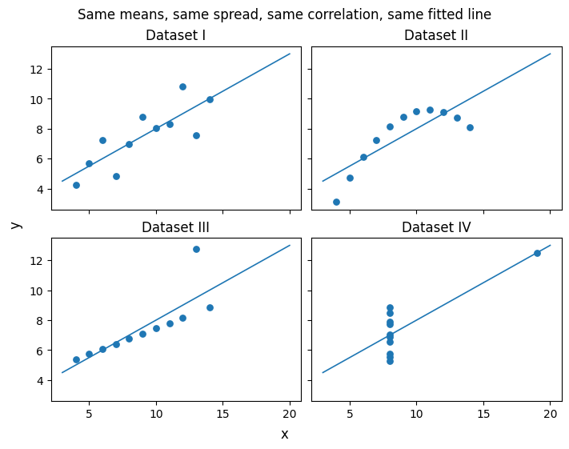
One is the relationship the statistics describe. Two is curved, so a straight line is the wrong summary of it. Three is a straight line plus a single point pulling the fit upward. Four has no relationship at all: one point at x = 19 manufactures the entire correlation. The statistics could not tell you any of that, and one glance can.
Three things a figure is for
From the course lecture, and worth keeping in this order, because it is also the order the capstone runs in:
Purpose
Audience
The question it answers
Explore
you
what is in here that I did not expect?
Explain
a colleague
here is what I found, and why I believe it
Persuade
the Cabinet
here is what we should do about it
The same numbers can serve all three, and the figure that serves one badly serves the others worse. An exploratory chart is allowed to be ugly and fast. A chart in a Cabinet report is not.
Which chart answers which question
Choosing a chart type by how it looks, rather than by the structure of the data and the question being asked, is how a figure ends up unreadable. Each type has a job:
Chart
Use it when
What it shows
Built in
Histogram
one continuous variable
the shape of a distribution: skew, spread, whether there is one hump or two
section 3
Box plot
comparing distributions across categories
median, quartiles and outliers, compactly enough to line several up
sections 3 and 5
Scatter plot
two continuous variables
relationship, clusters and outliers. Color or size can carry a third variable
sections 4 and 6
Bar chart
comparing discrete categories
one value per category, compared by length. Start the axis at zero
section 5
Line chart
change over an ordered variable, usually time
trend and continuity. The line claims the values between the points exist
section 9
Heatmap
a matrix of values
which variables move together, most often a correlation matrix
section 11
Three to be wary of, all of which section 9 takes apart: pie charts, because comparing angles is harder than comparing lengths; three-dimensional charts, where the depth carries no data and distorts the comparison; and dual-axis charts, which let the person drawing them decide how related two series appear.
The same column, twice
Here is course_score as a table, and as a picture. Read both, then decide which one you would put in a report and which one you would keep for yourself.
cohort.course_score.describe().round(2)
output
count 100.00
mean 68.34
std 10.48
min 46.0025% 60.7850% 68.0575% 74.45
max 91.90
Name: course_score, dtype: float64
scores = cohort.course_score
fig, ax = plt.subplots(figsize=(6, 3), layout="constrained")
ax.hist(scores, bins=12, edgecolor="white")
ax.set_xlabel("course score")
ax.set_ylabel("students")
ax.set_title(f"Course scores center on {scores.median():.0f}, "f"spread about {scores.std():.0f} points (n = {scores.notna().sum()})")
output
Text(0.5, 1.0, 'Course scores center on 68, spread about 10 points (n = 100)')
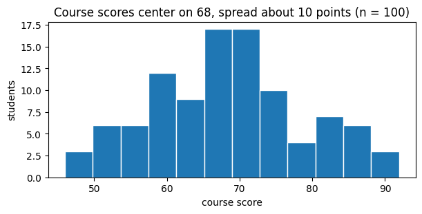
What happened
The table gives you the quartiles exactly, which the picture only implies. The picture gives you the shape, which the table hides: a mean of 68.3 and a median of 68.1 are equally consistent with one hump, with two, or with a long tail on one side, and you cannot tell which from the two numbers. Here it is a single hump, roughly balanced, which is worth knowing before you report a mean as though it described every student.
Takeaway
Statistics summarize; figures reveal shape. Use the table when the reader needs a number and the figure when the reader needs to see a pattern. Also note the title of that last figure: it states a finding, and the n in it was computed by the cell rather than typed by hand. Every figure in this module does that, and section 14 grades you on it.
Every figure you make from here on starts with the same line:
fig, ax = plt.subplots()
Two objects come back, and knowing which is which explains most of matplotlib.
# alt: An empty figure with a single set of axes, showing the two objects.
fig, ax = plt.subplots(figsize=(5, 3), layout="constrained")
print(type(fig))
print(type(ax))
its size, the title over everything, saving to a file
Axes
one plot inside that image
the data, the x and y axis, the labels, the legend
Axis
a single scale on an Axes
its ticks, its limits, its formatting
Artist
anything drawn
every line, dot, label and spine is one
An Axes means a single set of axes, which is one panel of the figure, while an axis is one scale on it. The two words look like a singular and a plural of each other, which is what makes the naming confusing the first time and clear after that.
The practical rule: if it is about the picture, ask the Figure. If it is about the data, ask the Axes.
fig, ax = plt.subplots(figsize=(6, 3.5), layout="constrained")
ax.scatter(cohort.hs_gpa, cohort.ug_gpa, s=26, alpha=0.75)
ax.set_xlabel("high school GPA") # the Axes owns the labels
ax.set_ylabel("undergraduate GPA")
ax.set_title("One Axes, one claim")
fig.suptitle("The Figure owns this line", fontsize=10) # and the Figure the frame
output
Text(0.5, 0.98, 'The Figure owns this line')
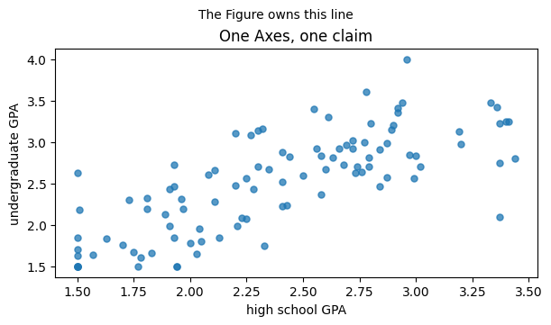
The other interface, once
matplotlib has a second way to draw the same figure, and you will meet it constantly, so it is worth seeing exactly once.
The implicit interface, also called the pyplot interface, keeps track of the last figure and axes you touched and adds things to whatever it thinks you meant. The explicit interface, the one this module uses, hands you the objects and makes you name them.
Here is one figure, drawn both ways.
# implicit: no objects are named, and there is no way to refer back
plt.plot([1, 2, 3, 4])
plt.ylabel("some numbers")
output
Text(0, 0.5, 'some numbers')
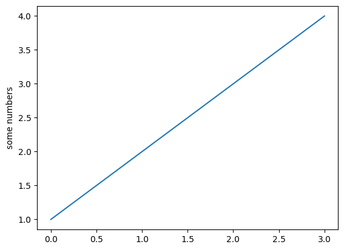
# explicit: the same figure, with the objects named
fig, ax = plt.subplots()
ax.plot([1, 2, 3, 4])
ax.set_ylabel("some numbers")
output
Text(0, 0.5, 'some numbers')
Identical output, four lines each. On one plot the difference is preference. Here is where it stops being preference.
Predict before you read on
Predict. You have three series with very different magnitudes: about 1 to 4, about 100 to 400, and about 1000 to 4000. If you call plt.plot() three times in a row, what do you get? Commit to an answer before you run the next cell.
All three landed on the same Axes, because that is what the implicit interface is for: it adds to the current one. The first series is now a flat line at the bottom, unreadable, because it shares a y axis with values a thousand times larger. Nothing failed. You just cannot see two thirds of your data.
# The explicit fix: three Axes, named, each with its own scale.
fig, axes = plt.subplots(3, 1, figsize=(5.5, 5), layout="constrained")
series = [[1, 2, 3, 4], [100, 200, 300, 400], [1000, 2000, 3000, 4000]]
for ax, values inzip(axes, series):
ax.plot(values)
ax.set_ylabel("numbers")
axes[-1].set_xlabel("index")
fig.suptitle("Three scales, three Axes")
output
Text(0.5, 0.98, 'Three scales, three Axes')
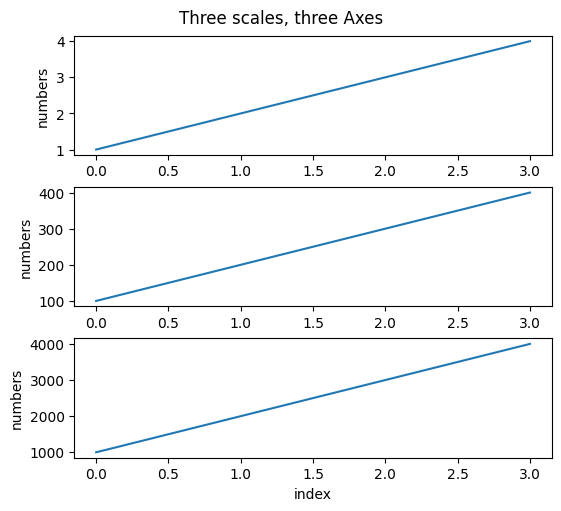
Translating between them
You will need to read the implicit form, because most examples online use it. The mapping is nearly mechanical:
Implicit
Explicit
plt.plot(x, y)
ax.plot(x, y)
plt.xlabel("t")
ax.set_xlabel("t")
plt.title("...")
ax.set_title("...")
plt.xlim(0, 10)
ax.set_xlim(0, 10)
plt.xticks(pos, labels)
ax.set_xticks(pos, labels)
plt.legend()
ax.legend()
plt.savefig("f.png")
fig.savefig("f.png")
The pattern: a plt. function that sets something becomes ax.set_something. A plt. function that draws something keeps its name and moves onto the Axes.
Why most examples you find will look different
This is worth knowing before you start searching, because it will otherwise read as though the course and the internet disagree.
Around 2021 and 2022 the reference material settled on the explicit interface. matplotlib's own documentation now says:
In general, we suggest using the OO style, particularly for complicated plots, and functions and scripts that are intended to be reused as part of a larger project. However, the pyplot style can be very convenient for quick interactive work.
The tutorial sites largely did not follow. Roughly two thirds of the widely used introductions still lead with the implicit interface, and that includes several whose pages carry a recent update date, because a page can be revised for formatting without its code being modernized. One well known reference site teaches plotting without ever using the words Figure or Axes.
So expect a mismatch, and read it as a historical artifact rather than a disagreement about what is correct. The translation table above is the tool for it.
Two honest notes on our own rule. First, matplotlib suggests the explicit style, which is weaker than a requirement, and the implicit style is genuinely convenient for a throwaway look at something. This module uses the explicit form everywhere anyway, for consistency and because every multi-panel figure needs it. Second, plt.subplots() is itself a pyplot function. "Explicit" does not mean avoiding plt.; it means that once the Figure and Axes exist, you address them by name.
Takeaway
fig, ax = plt.subplots() is the first line of every figure in this module. The Figure owns the image, the Axes owns one plot inside it. The implicit interface adds to whatever axes it thinks you meant, which is convenient until there is more than one, and there is nearly always more than one.
Your turn
Build a single figure with two Axes side by side: hs_attendance against course_score on the left, ug_gpa against course_score on the right. Label both axes on both panels, give each panel a title, and use a constrained layout.
Note what you did not have to do: no plt.subplot(1, 2, 1), no keeping track of which panel is current. You named both panels up front and then addressed them. The explicit interface exists for that, and it is why the next twelve sections never mention the other one again.
The first question about any column is what its values do: where they sit, how far they range, whether they cluster in one place or two. The histogram answers it by counting values into bins and drawing the counts.
Predict. The same 100 scores, drawn with 5 bins and then with 25. Does the shape you just saw survive both? Commit to an answer before you run the next cell.
fig, axes = plt.subplots(1, 3, figsize=(10, 3.2), sharey=True,
layout="constrained")
for ax, n_bins inzip(axes, [5, 12, 25]):
counts, _, _ = ax.hist(scores, bins=n_bins, edgecolor="white")
ax.set_xlabel("course score")
ax.set_title(f"{n_bins} bins (tallest bar: {int(counts.max())})")
axes[0].set_ylabel("students")
fig.suptitle("One column, three bin counts, three impressions")
What happened
output
Text(0.5, 0.98, 'One column, three bin counts, three impressions')
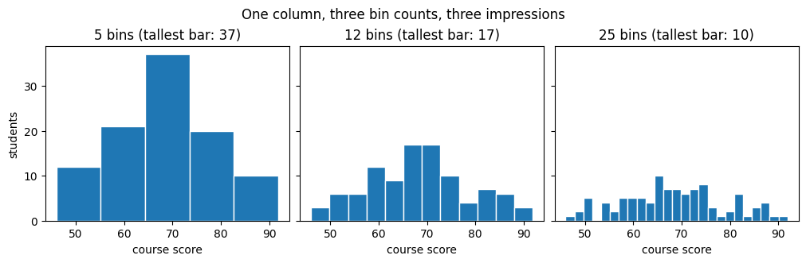
At 5 bins the tallest bar holds 37 of the 100 students, and the distribution looks like one solid block. At 25 bins the tallest holds 10, one bin is empty, and the same data looks ragged and possibly bumpy. Nothing about the students changed between those three pictures. The bin width is a choice you made, and it is a choice your reader cannot see.
Choosing a bin count honestly
There is no correct number, which is exactly why it has to be a deliberate choice rather than a default you never looked at.
Too few bins and real structure disappears into one block.
Too many and sampling noise looks like structure.
Look at two or three before you settle, which is what you just did.
matplotlib will also compute a bin count for you from the data, using rules that account for both the spread and the sample size.
for rule in ["auto", "sturges", "fd"]:
edges = np.histogram_bin_edges(scores.dropna(), bins=rule)
print(f"{rule:8} -> {len(edges) - 1} bins, width {edges[1] - edges[0]:.1f}")
Report the bin count, or use a named rule and say which. A histogram without that information cannot be reproduced, and the reader has no way to know whether the shape is in the data or in your choice.
The boxplot: the same column, compressed
A boxplot throws away the shape and keeps the summary: median, the middle half, the reach of the whiskers, and anything beyond them drawn as a point.
Text(0.5, 0.98, 'Median 68.0, middle half 60.8 to 74.5')
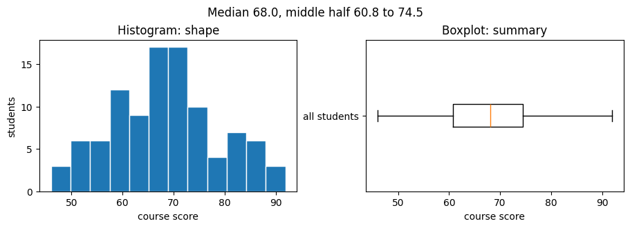
Note tick_labels= in that call. It used to be labels=, which was removed from matplotlib in version 3.11. If you find an example online using labels= on a boxplot, that is the version you are looking at, not a mistake in your code.
What happened
The boxplot is compact and exact about the quartiles, and it is blind to shape. A distribution with two separate humps and a distribution with one can produce very similar boxes. Use the box when you are comparing several groups at once and the shape is not the point. Use the histogram when it is.
Takeaway
Histogram for shape, boxplot for comparison. The boxplot's advantage appears the moment you have four groups to line up, which is section 5. Its cost is that it hides everything the shape would have told you.
Your turn
Draw the distribution of logins_per_week. State the n in the title, computed rather than typed, and choose the bin count deliberately.
Show a worked solution
logins = cohort.logins_per_week
fig, ax = plt.subplots(figsize=(6, 3.2), layout="constrained")
ax.hist(logins.dropna(), bins=12, edgecolor="white")
ax.set_xlabel("logins per week")
ax.set_ylabel("students")
ax.set_title(f"Weekly logins, median {logins.median():.1f} "f"(n = {logins.notna().sum()} of {len(cohort)})")
Takeaway
That n is 85, not 100, because the LMS records are missing for fifteen students. hist did not warn you: it drew what it had. The title is the only place a reader can learn that fifteen students are absent from the figure.
The Cabinet's actual question is which students struggle and what precedes it. That is a question about pairs of columns, and the scatter plot is how you look at a pair.
Institutional Research has two candidate explanations on the table. One is prior achievement: students arrive with a high school record, and perhaps that record carries the outcome. The other is engagement: what a student does in the course once it starts. They imply completely different interventions, so the difference matters.
alpha=0.75 makes the dots slightly transparent, so that two points landing on top of each other look different from one. With a hundred points it barely matters; with ten thousand it is the difference between a scatter plot and a solid blob.
And the correlation in the title was computed in the same cell that drew the figure. The 0.72 was never typed by hand, so if the data changes the title changes with it. That is the rule for every figure in this module: the title states a finding, and the number in it is computed.
Predict before you read on
Predict. Now the other candidate: prior GPA against course score. Stronger or weaker than engagement? Commit to an answer before you run the next cell.
fig, axes = plt.subplots(1, 2, figsize=(10, 4), sharey=True,
layout="constrained")
for ax, col, label in [(axes[0], "logins_per_week", "logins per week"),
(axes[1], "hs_gpa", "high school GPA")]:
sub = cohort[[col, "course_score"]].dropna()
r = sub[col].corr(sub.course_score)
ax.scatter(sub[col], sub.course_score, s=28, alpha=0.75)
ax.set_xlabel(label)
ax.set_title(f"r = {r:.2f}, n = {len(sub)}")
axes[0].set_ylabel("course score")
fig.suptitle("Engagement is the stronger signal, on different sample sizes")
What happened
output
Text(0.5, 0.98, 'Engagement is the stronger signal, on different sample sizes')
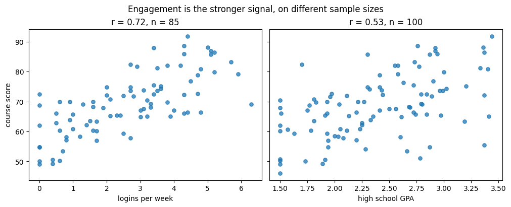
Engagement comes out at 0.72 and prior GPA at 0.53, so the thing a student does during the course tracks the outcome more closely than the record they arrived with. That is the finding, and it is the one with a usable intervention attached.
Notice the two panels do not have the same n. The engagement panel has 85 students because of the missing LMS records; the GPA panel has all 100. Two correlations computed on different samples are not strictly comparable, and the honest move is to say so on the figure rather than let the reader assume.
Adding a line, and what a line does not claim
A fitted line summarizes the trend. It is worth adding when the reader needs the direction and rough rate. It is worth being careful about, because a line invites two readings it does not support.
sub = cohort[["logins_per_week", "course_score"]].dropna()
slope, intercept = np.polyfit(sub.logins_per_week, sub.course_score, 1)
grid = np.linspace(sub.logins_per_week.min(), sub.logins_per_week.max(), 50)
fig, ax = plt.subplots(figsize=(6, 4), layout="constrained")
ax.scatter(sub.logins_per_week, sub.course_score, s=28, alpha=0.7)
ax.plot(grid, slope * grid + intercept, color="black", linewidth=1.5)
ax.set_xlabel("logins per week")
ax.set_ylabel("course score")
ax.set_title(f"About {slope:.1f} points per extra login per week "f"(n = {len(sub)})")
output
Text(0.5, 1.0, 'About 4.4 points per extra login per week (n = 85)')
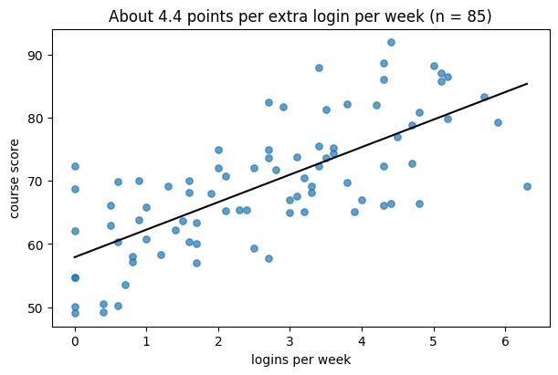
Takeaway
What the line says: across these 85 students, each additional login per week goes with about 4 more points on average.
What it does not say: that logging in more would raise a given student's score, and that any individual student will land on the line. The scatter around it is large, and a student sitting 15 points above the line is not an error. A line is a summary of a cloud, and reporting it without the cloud is one of the ways the next section shows a figure misleading.
Your turn
Build a two-panel figure comparing time_on_task_hrs and submission_rate against course_score. Compute each correlation into its panel title, state each n, and share the y axis so the panels can be read against each other.
Show a worked solution
fig, axes = plt.subplots(1, 2, figsize=(10, 4), sharey=True,
layout="constrained")
for ax, col, label in [(axes[0], "time_on_task_hrs", "time on task (hours)"),
(axes[1], "submission_rate", "submission rate")]:
sub = cohort[[col, "course_score"]].dropna()
r = sub[col].corr(sub.course_score)
ax.scatter(sub[col], sub.course_score, s=28, alpha=0.75)
ax.set_xlabel(label)
ax.set_title(f"r = {r:.2f}, n = {len(sub)}")
axes[0].set_ylabel("course score")
fig.suptitle("Both engagement measures track the outcome")
labels = ["did not succeed", "succeeded"]
means = by_group["mean"]
fig, ax = plt.subplots(figsize=(5, 3.5), layout="constrained")
ax.bar([0, 1], means, width=0.6)
ax.set_xticks([0, 1], labels) # positions and labels together (D33)
ax.set_ylabel("mean course score")
ax.set_title(f"A {means.iloc[1] - means.iloc[0]:.0f} point gap in group means")
output
Text(0.5, 1.0, 'A 16 point gap in group means')
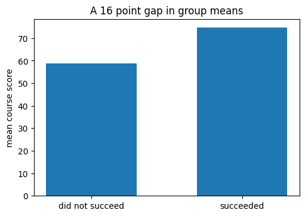
Predict before you read on
Predict. That gap looks decisive. If you drew the same two groups as boxplots instead, would the two groups still look separate? Commit to an answer before you run the next cell.
fig, axes = plt.subplots(1, 2, figsize=(9, 3.8), sharey=True,
layout="constrained")
axes[0].bar([0, 1], means, width=0.6)
axes[0].set_xticks([0, 1], labels)
axes[0].set_ylabel("course score")
axes[0].set_title("Means only")
groups = [cohort.loc[cohort.success == v, "course_score"].dropna() for v in (0, 1)]
axes[1].boxplot(groups, tick_labels=labels)
axes[1].set_title("The same students, all of them")
fig.suptitle("The bar chart is two numbers; the boxplot is a hundred")
What happened
output
Text(0.5, 0.98, 'The bar chart is two numbers; the boxplot is a hundred')
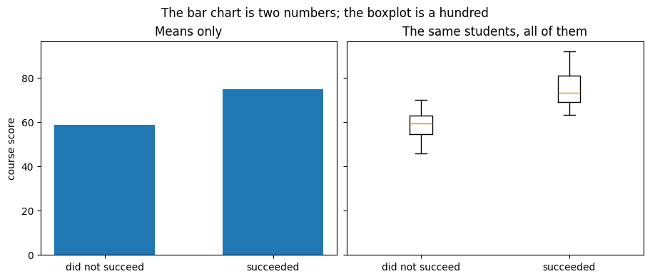
The gap is real: 58.7 against 74.8. But the bar chart draws two numbers and implies the groups are neatly separated, while the boxplot shows the top of the lower group reaching well into the range of the upper one. Both figures are honest. The bar chart is simply answering a narrower question than the reader will assume it answered.
Error bars, and saying what they are
An error bar is the usual fix for a bar chart that hides its spread. It is only useful if the reader knows what the bar represents, because a standard deviation and a standard error of the mean differ by a factor of the square root of n and look identical on the page.
sd = by_group["std"]
sem = by_group["std"] / np.sqrt(by_group["count"])
fig, axes = plt.subplots(1, 2, figsize=(9, 3.5), sharey=True, layout="constrained")
for ax, err, name in [(axes[0], sd, "standard deviation"),
(axes[1], sem, "standard error of the mean")]:
ax.bar([0, 1], means, width=0.6, yerr=err, capsize=6)
ax.set_xticks([0, 1], labels)
ax.set_title(f"error bars: {name}")
axes[0].set_ylabel("course score")
fig.suptitle("Same data, same bars, error bars that mean different things")
output
Text(0.5, 0.98, 'Same data, same bars, error bars that mean different things')
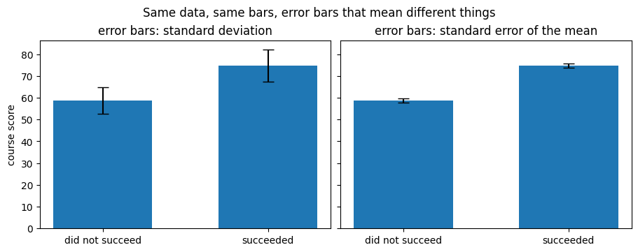
Takeaway
Always label what the error bar is. Standard deviation describes the students; standard error describes how well the mean is pinned down, and it shrinks as the sample grows. A reader who assumes the wrong one will read the wrong amount of certainty off your figure.
Category order
Categories with no natural order should be sorted by value, because a reader compares neighboring bars first. Alphabetical order is a sorting of the labels rather than the data, and it makes the reader do the work.
counts = cohort.hs_clubs.value_counts()
fig, axes = plt.subplots(1, 2, figsize=(9, 3.2), sharey=True, layout="constrained")
alpha_order = counts.sort_index()
axes[0].bar(alpha_order.index.astype(str), alpha_order.values)
axes[0].set_title("By club count")
axes[0].set_ylabel("students")
by_size = counts.sort_values(ascending=False)
axes[1].bar(by_size.index.astype(str), by_size.values)
axes[1].set_title("By frequency")
fig.suptitle("Order is a choice, and it decides what the reader compares first")
output
Text(0.5, 0.98, 'Order is a choice, and it decides what the reader compares first')
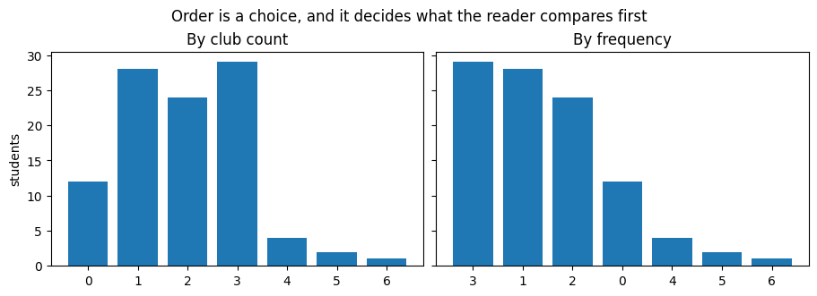
What happened
When the category is itself a number, as club count is, the natural order is the numeric one and sorting by frequency destroys information. When the category is a name with no inherent order, sorting by value is nearly always the better figure. So the rule to carry is "know which kind of category you have", which decides the order for you.
Your turn
Compare mean logins_per_week between the two success groups, as bars with standard error bars, and state both n values on the figure. The n matters here more than usual: the LMS holes are not spread evenly across the two groups.
Show a worked solution
stats = (cohort.dropna(subset=["logins_per_week"])
.groupby("success").logins_per_week.agg(["count", "mean", "std"]))
sem = stats["std"] / np.sqrt(stats["count"])
fig, ax = plt.subplots(figsize=(5.5, 3.5), layout="constrained")
ax.bar([0, 1], stats["mean"], width=0.6, yerr=sem, capsize=6)
ax.set_xticks([0, 1], [f"{labels[0]}\n(n = {stats['count'].iloc[0]})",
f"{labels[1]}\n(n = {stats['count'].iloc[1]})"])
ax.set_ylabel("mean logins per week")
ax.set_title("Error bars are the standard error of the mean")
Takeaway
The two groups contribute 29 and 56 students to that figure, not 40 and 60. The missing LMS records fall more often on the students who did not succeed, which is exactly why Module 4 refused to drop those rows. A figure that states only "n = 85" would hide the imbalance that matters most.
This is the one worth getting right. A relationship that looks solid can be produced entirely by a third variable, and a scatter plot on its own cannot tell you which you have.
Institutional Research has a proposal in front of it: fund high school outreach clubs, because students who did more activities score better. Here is the evidence for it.
That is a real pattern in the data, and the title is true as written. A report could stop here, and plenty do.
The question worth asking before it does: what kind of student joins more clubs?
Predict before you read on
Predict. Students with stronger high school records tend to join more activities. If you split the cohort into three GPA groups and look at clubs against score inside each one, what happens to the relationship? Commit to an answer before you run the next cell.
sub = sub.assign(band=pd.qcut(sub.hs_gpa, 3,
labels=["lower third", "middle third", "upper third"]))
fig, axes = plt.subplots(1, 3, figsize=(11, 3.6), sharex=True, sharey=True,
layout="constrained")
for ax, (name, g) inzip(axes, sub.groupby("band", observed=True)):
r = g.hs_clubs.corr(g.course_score)
ax.scatter(g.hs_clubs, g.course_score, s=26, alpha=0.75)
ax.set_xlabel("high school clubs")
ax.set_title(f"{name}\nGPA {g.hs_gpa.min():.2f} to {g.hs_gpa.max():.2f}\n"f"r = {r:.2f}, n = {len(g)}")
axes[0].set_ylabel("course score")
fig.suptitle("Inside a GPA band, clubs and score barely move together")
What happened
output
Text(0.5, 0.98, 'Inside a GPA band, clubs and score barely move together')
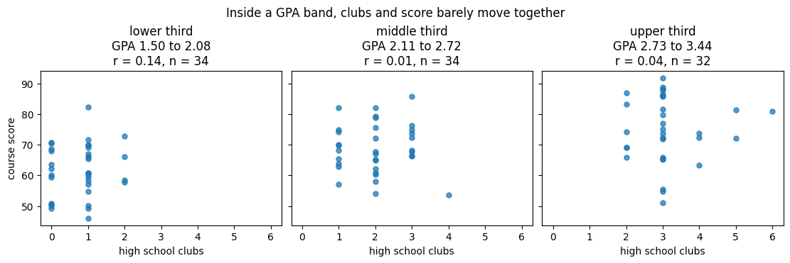
Across the whole cohort the correlation is 0.43. Inside the three GPA thirds it is 0.14, 0.01 and 0.04. The relationship did not weaken, it essentially disappeared, which means it was never between clubs and scores. It was between GPA and both of them: stronger students join more clubs, and stronger students score better.
# The same result as one number, for the report: the correlation# between clubs and score after removing what GPA explains of each.
resid_clubs = sub.hs_clubs - np.polyval(np.polyfit(sub.hs_gpa, sub.hs_clubs, 1), sub.hs_gpa)
resid_score = sub.course_score - np.polyval(np.polyfit(sub.hs_gpa, sub.course_score, 1), sub.hs_gpa)
print(f"raw correlation : {r_raw:+.2f}")
print(f"after controlling for hs_gpa : {np.corrcoef(resid_clubs, resid_score)[0, 1]:+.2f}")
output
raw correlation : +0.43
after controlling for hs_gpa : -0.03
Takeaway
0.43 becomes -0.03. Funding clubs to raise course scores would be spending money on a correlation that belongs to something else.
This is the figure that changes a decision, and note what changed it: no extra data arrived and no fancier statistic was reached for. The same numbers were drawn grouped by the variable that might explain them. Faceting is a visual control. When someone shows you a scatter plot and a policy proposal, the useful question is what else differs between the points on the left and the points on the right.
The same control, in one panel
Three panels make the comparison exact. One panel with the third variable in color makes it immediate, and fits in a report that has room for one figure.
fig, ax = plt.subplots(figsize=(6.5, 4.2), layout="constrained")
for name, g in sub.groupby("band", observed=True):
ax.scatter(g.hs_clubs, g.course_score, s=32, alpha=0.8, label=name)
ax.set_xlabel("high school clubs")
ax.set_ylabel("course score")
ax.legend(title="high school GPA")
ax.set_title("The bands stack by GPA, and each one is flat")
output
Text(0.5, 1.0, 'The bands stack by GPA, and each one is flat')
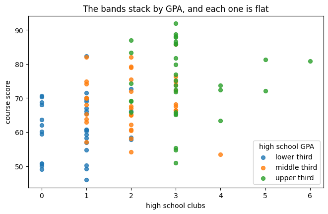
What happened
Read it as three flat clouds sitting at three heights. The upward slope in the first figure was the stacking, not the slope of any one band. Once you can see that shape, you can recognize it in other people's figures.
Your turn
internships correlates with course_score at about 0.46. Check whether it survives the same control: split by GPA third and report the correlation inside each band on its panel title.
Sections 4 and 6 compared two things at a time. The report needs four predictors compared at once, and four separate figures make the reader hold each one in memory while scrolling to the next.
A grid of panels sharing a scale removes that work.
predictors = [("hs_gpa", "high school GPA"),
("hs_attendance", "attendance"),
("logins_per_week", "logins per week"),
("submission_rate", "submission rate")]
fig, axes = plt.subplots(2, 2, figsize=(9, 6.5), sharey=True, layout="constrained")
for ax, (col, label) inzip(axes.flat, predictors):
sub = cohort[[col, "course_score"]].dropna()
r = sub[col].corr(sub.course_score)
ax.scatter(sub[col], sub.course_score, s=24, alpha=0.7)
ax.set_xlabel(label)
ax.set_title(f"r = {r:.2f}, n = {len(sub)}")
for ax in axes[:, 0]:
ax.set_ylabel("course score")
fig.suptitle("What predicts course score: the two engagement measures win")
output
Text(0.5, 0.98, 'What predicts course score: the two engagement measures win')
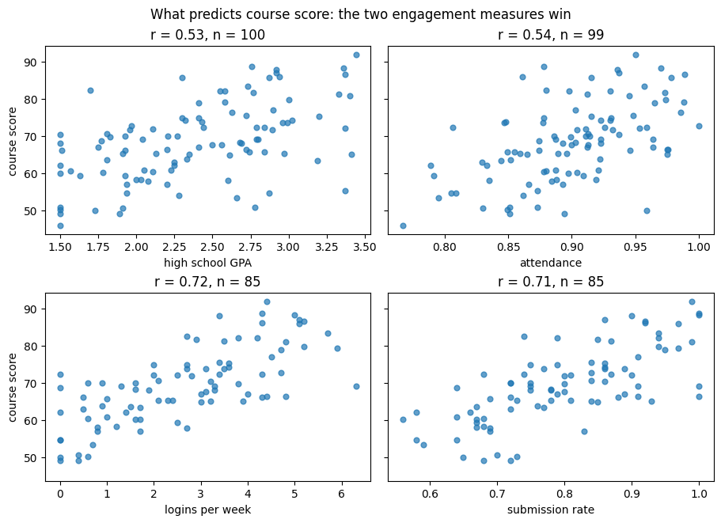
Three things are doing the work there.
axes.flat walks the 2 by 2 array as a flat sequence, so the loop does not need to know the grid shape. sharey=True gives every panel the same y axis, which is what makes the four comparable at a glance. And layout="constrained" sizes the gaps so the labels do not collide.
That last one is worth a note, because you will see the older tool everywhere.
A word on layout
matplotlib's original layout helper was tight_layout(), called after the figure was built. The current documentation describes it as superseded and points to constrained layout instead, which you request when the figure is created:
Constrained layout handles the cases tight_layout struggles with, including colorbars and panels that span rows. One trap worth knowing: **calling tight_layout() on a figure turns constrained layout off**, so mixing the two leaves you with the older behavior and no warning.
Predict before you read on
Predict. The same four panels without sharey. What changes about how the four relationships compare? Commit to an answer before you run the next cell.
fig, axes = plt.subplots(2, 2, figsize=(9, 6.5), layout="constrained")
for ax, (col, label) inzip(axes.flat, predictors):
sub = cohort[[col, "course_score"]].dropna()
ax.scatter(sub[col], sub.course_score, s=24, alpha=0.7)
ax.set_xlabel(label)
ax.set_ylabel("course score")
fig.suptitle("The same four panels, each on its own y axis")
What happened
output
Text(0.5, 0.98, 'The same four panels, each on its own y axis')
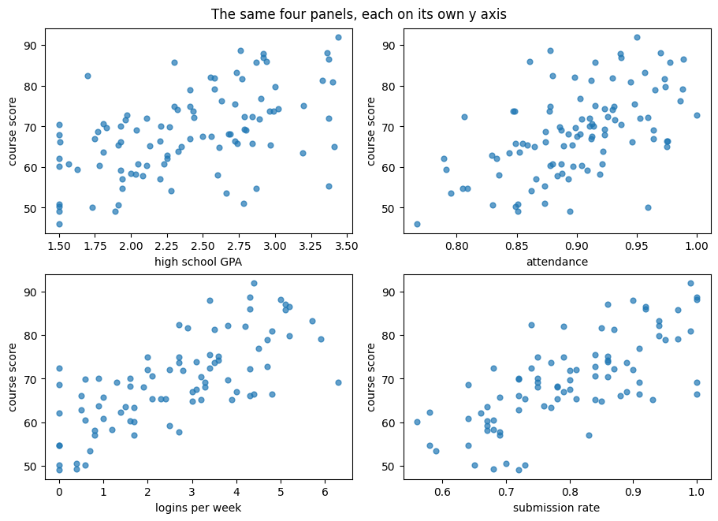
Every panel now fills its own space, so all four look similarly spread out and similarly steep. The differences between the four relationships, which is the entire reason for putting them side by side, are gone. In a comparison figure the shared axis is the thing that makes it a comparison, which puts it well above a formatting preference.
When the grid is not a grid
plt.subplots gives you even rows and columns. When the report needs one wide panel above two narrow ones, plt.subplot_mosaic lets you draw the layout and name the panels, which is easier to read six months later than axes[1, 0].
fig, axd = plt.subplot_mosaic([["overview", "overview"],
["engagement", "prior"]],
figsize=(9, 6), layout="constrained")
axd["overview"].hist(cohort.course_score, bins=12, edgecolor="white")
axd["overview"].set_xlabel("course score")
axd["overview"].set_ylabel("students")
axd["overview"].set_title("The outcome we are explaining")
for key, col, label in [("engagement", "logins_per_week", "logins per week"),
("prior", "hs_gpa", "high school GPA")]:
sub = cohort[[col, "course_score"]].dropna()
axd[key].scatter(sub[col], sub.course_score, s=22, alpha=0.7)
axd[key].set_xlabel(label)
axd[key].set_ylabel("course score")
axd[key].set_title(f"r = {sub[col].corr(sub.course_score):.2f}")
fig.suptitle("One figure, three panels, named rather than numbered")
output
Text(0.5, 0.98, 'One figure, three panels, named rather than numbered')
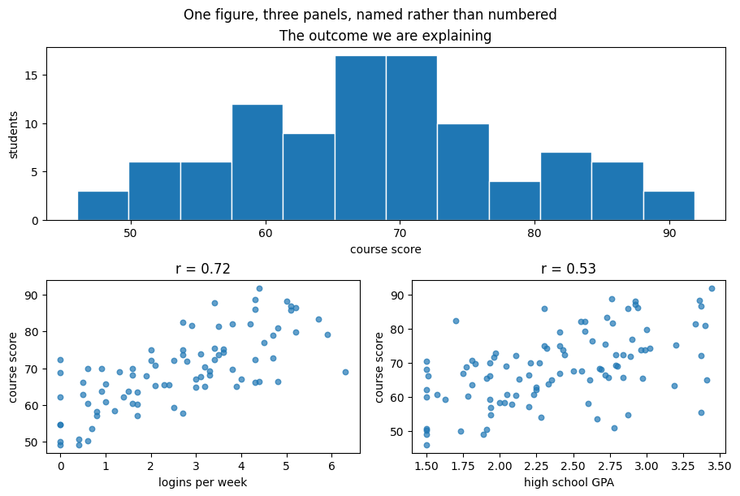
Takeaway
plt.subplots(rows, cols) for an even grid, axes.flat to loop it, sharey=True whenever the panels are meant to be compared, and plt.subplot_mosaic when the layout is irregular. Requesting layout="constrained" at creation is the current way to keep labels from colliding.
Your turn
Build a 1 by 3 figure comparing the distribution of course_score for students with 0, 1, and 2 or more internships. Share the y axis, put the group's n in each panel title, and give the figure a title that states what you see.
Show a worked solution
groups = [cohort[cohort.internships == 0],
cohort[cohort.internships == 1],
cohort[cohort.internships >= 2]]
labels = ["no internships", "one internship", "two or more"]
fig, axes = plt.subplots(1, 3, figsize=(10, 3.4), sharey=True, sharex=True,
layout="constrained")
for ax, g, label inzip(axes, groups, labels):
ax.hist(g.course_score, bins=8, edgecolor="white")
ax.set_xlabel("course score")
ax.set_title(f"{label} (n = {len(g)})")
axes[0].set_ylabel("students")
means = [g.course_score.mean() for g in groups]
fig.suptitle(f"Group means rise from {means[0]:.0f} to {means[-1]:.0f}")
A figure in a report is read for about three seconds before someone decides what it means. Whatever they decide in those three seconds is what your figure said, so it is worth choosing that sentence yourself.
sub = cohort[["logins_per_week", "course_score"]].dropna()
fig, axes = plt.subplots(1, 2, figsize=(10, 4), sharey=True, layout="constrained")
for ax in axes:
ax.scatter(sub.logins_per_week, sub.course_score, s=26, alpha=0.7)
ax.set_xlabel("logins per week")
axes[0].set_ylabel("course score")
axes[0].set_title("Logins vs course score")
axes[1].set_title(f"Students logging in twice a week score about "f"{sub[sub.logins_per_week >= 2].course_score.mean() - sub[sub.logins_per_week < 2].course_score.mean():.0f} "f"points higher")
output
Text(0.5, 1.0, 'Students logging in twice a week score about 13 points higher')
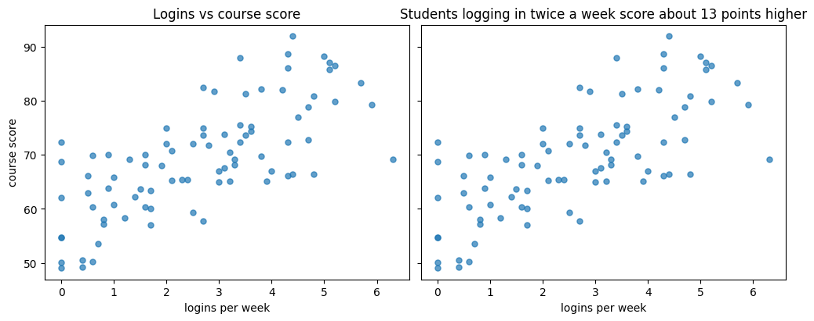
What happened
Identical data, identical marks. The left title names the axes, which the axes already do. The right title makes a claim, and the reader can check it against the picture. A title that repeats the axis labels spends the reader's attention without giving anything back.
Annotation: the one point worth naming
Most points on a scatter plot are context. Occasionally one is the argument, and annotate puts a label on it with an arrow.
outlier = cohort.loc[cohort.logins_per_week.idxmax()]
fig, ax = plt.subplots(figsize=(6.5, 4.2), layout="constrained")
ax.scatter(sub.logins_per_week, sub.course_score, s=26, alpha=0.6)
ax.scatter([outlier.logins_per_week], [outlier.course_score], s=60, color="black")
ax.annotate(f"{outlier['name']}: most logins in the cohort,\nmid-range score",
xy=(outlier.logins_per_week, outlier.course_score),
xytext=(outlier.logins_per_week - 3.2, outlier.course_score + 12),
arrowprops={"arrowstyle": "->"})
ax.set_xlabel("logins per week")
ax.set_ylabel("course score")
ax.set_title("Engagement is not a guarantee")
output
Text(0.5, 1.0, 'Engagement is not a guarantee')
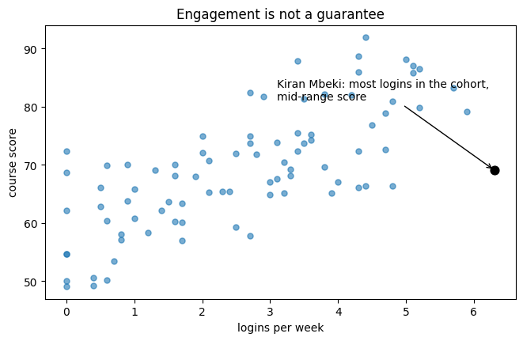
Takeaway
One annotation is a point of interest. Five annotations are a table, and a table is usually better at being a table. Annotate when a single case carries part of the argument, which here is that the relationship has real exceptions and the report should say so before someone else finds one.
Reference lines
A threshold the reader already cares about belongs on the figure, not in the caption. axhline and axvline draw one across the whole Axes.
below = int((cohort.course_score < 60).sum())
fig, ax = plt.subplots(figsize=(6.5, 4), layout="constrained")
ax.scatter(sub.logins_per_week, sub.course_score, s=26, alpha=0.7)
ax.axhline(60, color="black", linewidth=1, linestyle="--",
label=f"60 point threshold ({below} students below)")
ax.set_xlabel("logins per week")
ax.set_ylabel("course score")
ax.legend(loc="lower right")
ax.set_title("Who is below the line, and what were they doing")
output
Text(0.5, 1.0, 'Who is below the line, and what were they doing')
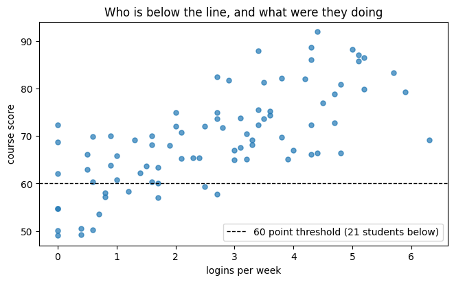
The legend earns its place there, because the dashed line needs explaining. When a figure has one series and no reference line, a legend just repeats the title. Prefer labeling the thing directly when you can.
Takeaway
Three questions for any figure before it leaves your hands. What is the one sentence? Does the title say it? Is there anything on the figure that does not help say it? The third question removes more than the first two add.
Your turn
Take the group comparison from section 5 and give it a title that states the finding with a computed number, plus a reference line at the cohort median with the number of students below it in its label.
Show a worked solution
labels = ["did not succeed", "succeeded"]
means = cohort.groupby("success").course_score.mean()
median = cohort.course_score.median()
below = int((cohort.course_score < median).sum())
fig, ax = plt.subplots(figsize=(5.5, 3.8), layout="constrained")
ax.bar([0, 1], means, width=0.6)
ax.axhline(median, color="black", linewidth=1, linestyle="--",
label=f"cohort median {median:.0f} ({below} students below)")
ax.set_xticks([0, 1], labels)
ax.set_ylabel("mean course score")
ax.legend(loc="lower right")
ax.set_title(f"The two groups differ by {means.iloc[1] - means.iloc[0]:.0f} points")
Three failures, and they are worth keeping separate because they call for different fixes:
Failure
What it means
Bad design
ugly, cluttered, confusing
Bad data
cherry-picked or misrepresented
Bad perception
hard to interpret
Every example below uses the cohort you have been working with, and every pair plots the same numbers twice. None of the misleading versions required a single false value, which is the part worth remembering.
Bad design
The data is fine and the chart is hard to read anyway.
means = cohort.groupby("success").course_score.mean()
labels = ["did not succeed", "succeeded"]
fig, axes = plt.subplots(1, 2, figsize=(10, 4), layout="constrained")
# Cluttered: a legend for two bars that are already labeled, gridlines drawn on# top of the data, a rotated axis, and a hatch pattern carrying no information.
axes[0].bar([0, 1], means, width=0.6, hatch="///", edgecolor="black",
label="mean score")
axes[0].grid(True, zorder=5, linewidth=1.4)
axes[0].set_xticks([0, 1], labels, rotation=45)
axes[0].legend(loc="upper left")
axes[0].set_ylabel("mean course score")
axes[0].set_title("Mean Course Score By Success Group (Bar Chart)")
# The same two numbers.
axes[1].bar([0, 1], means, width=0.6)
axes[1].set_xticks([0, 1], labels)
axes[1].set_ylabel("mean course score")
axes[1].set_title(f"Successful students average "f"{means.iloc[1] - means.iloc[0]:.0f} points higher")
output
Text(0.5, 1.0, 'Successful students average 16 points higher')
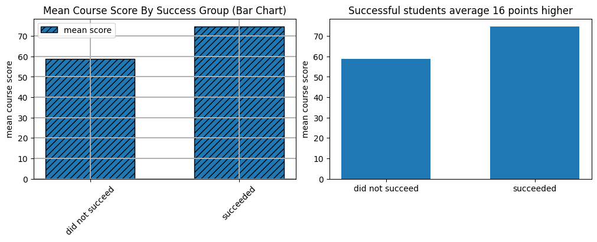
What happened
Every number in the left panel is accurate. It spends the reader's attention on a hatch pattern, a legend that names what the y axis already names, gridlines competing with the bars, and a title that describes the chart type. The right panel spends it on the finding.
Bad data
Now the harder category. Nothing here is fabricated. Each figure simply chooses what to show.
Predict before you read on
Predict. The two group means are 58.7 and 74.8. If the y axis started at 55 instead of 0, how much larger would the gap look? Commit to an answer before you run the next cell.
fig, axes = plt.subplots(1, 2, figsize=(9, 4), layout="constrained")
for ax, bottom, note in [(axes[0], 55, "y axis starts at 55"),
(axes[1], 0, "y axis starts at 0")]:
ax.bar([0, 1], means, width=0.6)
ax.set_ylim(bottom, 80)
ax.set_xticks([0, 1], labels)
ax.set_title(note)
axes[0].set_ylabel("mean course score")
ratio_truncated = (means.iloc[1] - 55) / (means.iloc[0] - 55)
ratio_honest = means.iloc[1] / means.iloc[0]
fig.suptitle(f"Truncated, one bar looks {ratio_truncated:.1f}x the other. "f"From zero, it is {ratio_honest:.2f}x")
What happened
output
Text(0.5, 0.98, 'Truncated, one bar looks 5.3x the other. From zero, it is 1.27x')
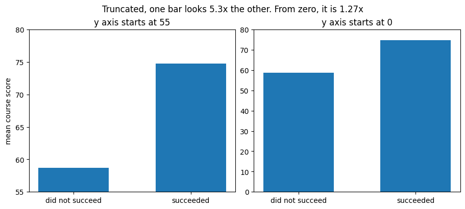
Truncating the axis turns a ratio of 1.27 into an apparent ratio of 5.4. Both charts plot 58.7 and 74.8. For a bar chart, where the reader compares the lengths of the bars, starting the axis anywhere but zero misrepresents the comparison. A line chart of a quantity that never approaches zero is the usual exception, and even then the axis needs to be labeled clearly enough that a 2 percent move cannot be read as a collapse.
# The dual axis: two series, two scales, one implied relationship.
band = cohort.assign(band=pd.qcut(cohort.hs_gpa, 3, labels=["lower", "middle", "upper"]))
by_band = band.groupby("band", observed=True).agg(
score=("course_score", "mean"), logins=("logins_per_week", "mean"))
fig, axes = plt.subplots(1, 2, figsize=(10, 4), layout="constrained")
ax1 = axes[0]
ax2 = ax1.twinx()
ax1.plot(range(3), by_band.score, marker="o", color="tab:blue")
ax2.plot(range(3), by_band.logins, marker="s", color="tab:red")
ax1.set_ylabel("mean course score", color="tab:blue")
ax2.set_ylabel("mean logins per week", color="tab:red")
ax1.set_xticks(range(3), by_band.index)
ax1.set_title("Two y axes: the lines look locked together")
axes[1].plot(range(3), by_band.score / by_band.score.iloc[0], marker="o",
label="course score")
axes[1].plot(range(3), by_band.logins / by_band.logins.iloc[0], marker="s",
label="logins per week")
axes[1].set_xticks(range(3), by_band.index)
axes[1].set_ylabel("relative to the lower band")
axes[1].legend()
axes[1].set_title("One axis: they move at very different rates")
output
Text(0.5, 1.0, 'One axis: they move at very different rates')
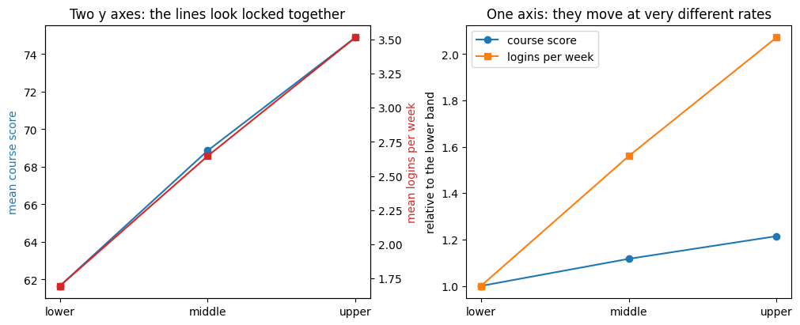
What happened
On two axes the lines sit on top of each other and imply a tight coupling. Put both on one scale and course score rises by about 21 percent across the bands while logins roughly double. The dual axis did not add information. It let the person drawing it choose, through the scaling, how related the two series appear.
# Cherry-picked range: drop the students at the low end and report# the correlation from what is left.
full = cohort[["logins_per_week", "course_score"]].dropna()
trimmed = full[full.logins_per_week >= 2]
fig, axes = plt.subplots(1, 2, figsize=(10, 4), sharey=True, layout="constrained")
for ax, data, note in [(axes[0], full, "everyone"),
(axes[1], trimmed, "only students logging in twice a week or more")]:
r = data.logins_per_week.corr(data.course_score)
ax.scatter(data.logins_per_week, data.course_score, s=26, alpha=0.7)
ax.set_xlabel("logins per week")
ax.set_title(f"{note}\nr = {r:.2f}, n = {len(data)}")
axes[0].set_ylabel("course score")
fig.suptitle("Same students, same scores, two different findings")
output
Text(0.5, 0.98, 'Same students, same scores, two different findings')
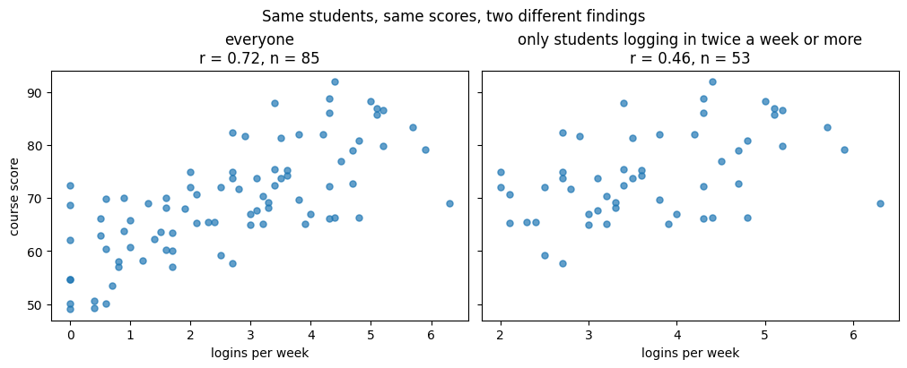
What happened
0.72 becomes 0.46, and the second figure is a perfectly honest description of the students it contains. What makes it misleading is reporting it as the relationship in the cohort. Restricting the range of a variable reduces the correlation almost mechanically, and it is worth recognizing in other people's work: whenever a sample is filtered on something related to the outcome, ask what the number looked like before the filter.
# Bin choice, chosen to produce a shape rather than to reveal one.
fig, axes = plt.subplots(1, 2, figsize=(9.5, 3.6), sharey=True, layout="constrained")
axes[0].hist(cohort.course_score, bins=[46, 56, 60, 64, 72, 76, 92],
edgecolor="white")
axes[0].set_title("Uneven bins: an apparent double hump")
axes[0].set_ylabel("students")
axes[1].hist(cohort.course_score, bins=12, edgecolor="white")
axes[1].set_title("Even bins: one hump")
for ax in axes:
ax.set_xlabel("course score")
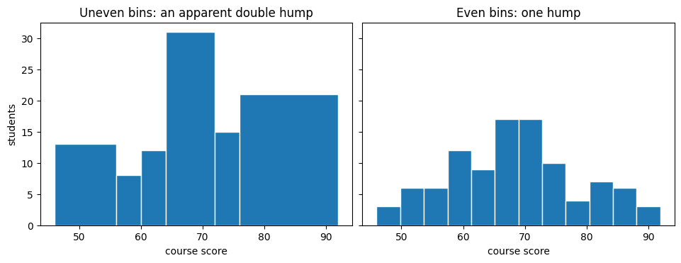
What happened
Uneven bin widths make the count in a wide bin look like a concentration, because the eye reads the bar's area and the axis only labels its height. Unequal bins have legitimate uses, and they require saying so.
Bad perception
The data is honestly represented and the reader's eye still gets it wrong.
# Area against length. Both panels encode the same two means.
fig, axes = plt.subplots(1, 2, figsize=(9, 4), layout="constrained")
for i, (m, label) inenumerate(zip(means, labels)):
axes[0].scatter([i], [1], s=(m ** 2) / 4, alpha=0.75)
axes[0].annotate(f"{m:.1f}", (i, 1), ha="center", va="center")
axes[0].set_xlim(-0.6, 1.6)
axes[0].set_xticks([0, 1], labels)
axes[0].set_yticks([])
axes[0].set_title("Encoded as area")
axes[1].bar([0, 1], means, width=0.6)
axes[1].set_xticks([0, 1], labels)
axes[1].set_ylabel("mean course score")
axes[1].set_title("Encoded as length")
fig.suptitle("A 27 percent difference, read two ways")
output
Text(0.5, 0.98, 'A 27 percent difference, read two ways')
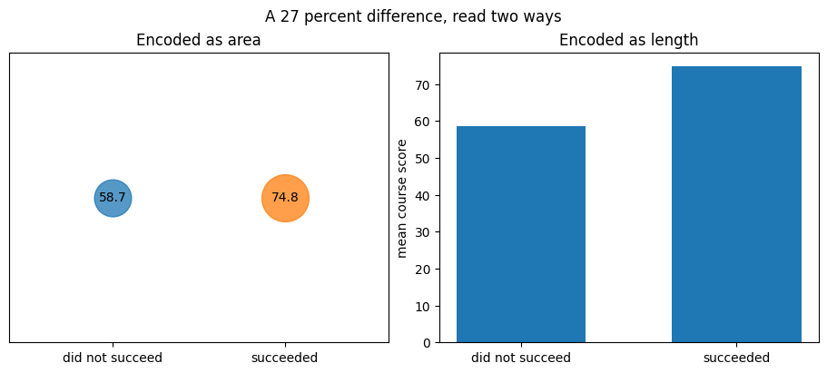
What happened
People compare lengths accurately and areas poorly, and they tend to underestimate an area difference. Encoding a quantity as the area of a circle asks the reader to do the harder task for no gain. The same objection applies to a chart drawn in three dimensions when the third dimension carries no data: the depth is decoration that distorts the comparison.
# Color implying a grouping the data does not support.
split = cohort.assign(
area=np.where(cohort.hs_pop_density > cohort.hs_pop_density.median(),
"denser area", "less dense area"))
gap = (split.groupby("area").course_score.mean().diff().abs().iloc[-1])
fig, axes = plt.subplots(1, 2, figsize=(10, 4), sharey=True, layout="constrained")
for name, g in split.groupby("area"):
axes[0].scatter(g.hs_gpa, g.course_score, s=28, alpha=0.8, label=name)
axes[0].legend()
axes[0].set_xlabel("high school GPA")
axes[0].set_ylabel("course score")
axes[0].set_title("Colored by a median split")
axes[1].scatter(cohort.hs_gpa, cohort.course_score, s=28, alpha=0.7, color="grey")
axes[1].set_xlabel("high school GPA")
axes[1].set_title(f"Uncolored: the group means differ by {gap:.1f} points")
output
Text(0.5, 1.0, 'Uncolored: the group means differ by 3.0 points')
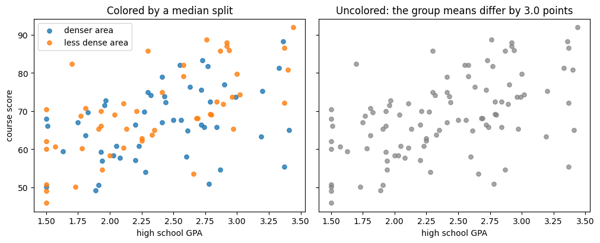
What happened
Color reads as category, and a category reads as a real difference between two kinds of student. The two groups here differ by about 3 points on a scale where the cohort's standard deviation is 10, and the split point was the median of a variable chosen arbitrarily. The colors are the entire finding.
This is also the ethics point from the capstone in visual form: population density is one of the two features Institutional Research decided not to model on, and drawing it as a color makes it look like an explanation.
Takeaway
The three checks, in the order they are worth running:
Design. Is anything on this figure not helping it say its sentence?
Data. Does the axis start where the comparison requires? Is this every observation, or a filtered subset? Did I choose the bins, the bands, or the split point after seeing what they did to the picture?
Perception. Am I asking the reader to compare lengths, or something harder? Does color mean a category that is really there?
A figure that passes all three can still be wrong. A figure that fails one of them is wrong in a way the reader has no way to detect, which is worse.
Your turn
Take the engagement scatter from section 4 and make it mislead, on purpose, in exactly one of the three ways. Then draw the honest version beside it, and write in the figure title which failure you demonstrated.
Show a worked solution
sub = cohort[["logins_per_week", "course_score"]].dropna()
fig, axes = plt.subplots(1, 2, figsize=(10, 4), layout="constrained")
# Bad data: a y axis cropped to the middle of the range makes a moderate# relationship look like a cliff.
axes[0].scatter(sub.logins_per_week, sub.course_score, s=26, alpha=0.7)
axes[0].set_ylim(60, 80)
axes[0].set_xlabel("logins per week")
axes[0].set_ylabel("course score")
axes[0].set_title("Cropped y axis, and 40 students dropped off the figure")
axes[1].scatter(sub.logins_per_week, sub.course_score, s=26, alpha=0.7)
axes[1].set_xlabel("logins per week")
axes[1].set_title(f"Full range (n = {len(sub)})")
fig.suptitle("Failure demonstrated: bad data, by cropping the axis")
Takeaway
Notice what the cropped panel does beyond steepening the slope: students outside the window are simply gone, with no gap, no note, and no change to the axis label. Cropping an axis on a scatter plot deletes observations, with nothing on the figure to mark their absence. That is the same failure as section 13's quiet ones, arrived at deliberately instead of by accident.
Color is the fastest channel a figure has and the easiest one to misuse. Two questions decide almost every color choice: what kind of variable is being encoded, and who has to read the result.
Four kinds of colormap, four kinds of question
matplotlib groups its colormaps into four classes, and the class is chosen by the data rather than by taste:
Class
Use it when
Examples
Sequential
the value has an order and one end matters
viridis, plasma, Blues
Diverging
there is a meaningful middle, and both directions matter
coolwarm, RdBu, PuOr
Cyclic
the value wraps around, like an angle or time of day
twilight, hsv
Qualitative
the categories have no order at all
tab10, Set2, petroff10
The mistake this taxonomy prevents is using a qualitative palette for an ordered variable, which tells the reader the categories are unrelated when they are a sequence.
# Sequential: one ordered variable, colored by how much of it there is.
sub = cohort[["hs_gpa", "course_score", "logins_per_week"]].dropna()
fig, ax = plt.subplots(figsize=(6.5, 4.2), layout="constrained")
points = ax.scatter(sub.hs_gpa, sub.course_score, c=sub.logins_per_week,
cmap="viridis", s=40)
fig.colorbar(points, ax=ax, label="logins per week")
ax.set_xlabel("high school GPA")
ax.set_ylabel("course score")
ax.set_title(f"Prior record and engagement, together (n = {len(sub)})")
output
Text(0.5, 1.0, 'Prior record and engagement, together (n = 85)')
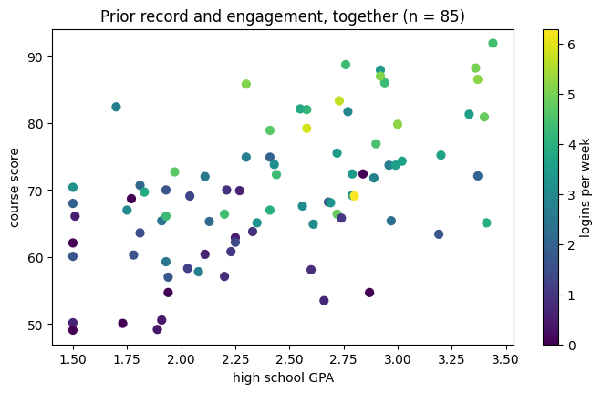
fig.colorbar(points, ax=ax, ...) asks the Figure for the colorbar and tells it which Axes to steal space from, which is the explicit form of what plt.colorbar() guesses.
viridis is matplotlib's default for a reason worth knowing: it is perceptually uniform, meaning equal steps in the data look like equal steps in color. The older jet and rainbow maps are not, so they invent boundaries where the data has none, and both go light in the middle and dark at both ends, which makes them unreadable in grayscale.
# Diverging: distance from a meaningful middle, in two directions.
mean_score = cohort.course_score.mean()
deviation = cohort.course_score - mean_score
limit = deviation.abs().max()
fig, ax = plt.subplots(figsize=(6.5, 4.2), layout="constrained")
points = ax.scatter(cohort.hs_gpa, cohort.hs_attendance, c=deviation,
cmap="coolwarm", vmin=-limit, vmax=limit, s=40)
fig.colorbar(points, ax=ax, label=f"points above or below the mean of {mean_score:.1f}")
ax.set_xlabel("high school GPA")
ax.set_ylabel("high school attendance")
ax.set_title("A diverging map has to be centered, or the middle color lies")
output
Text(0.5, 1.0, 'A diverging map has to be centered, or the middle color lies')
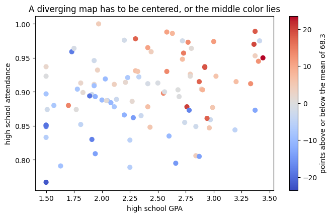
Takeaway
vmin=-limit, vmax=limit is what makes that figure honest. A diverging colormap puts its neutral color at the midpoint of the range it is given, so if the range is not symmetric around zero, the color that reads as "at the mean" sits somewhere else. This is the color version of a truncated axis.
Palettes that survive a colorblind reader, and a printer
About one man in twelve has some form of color vision deficiency, most often affecting red and green. matplotlib's default categorical cycle, tab10, is not documented as safe for that, and recent versions added sequences that are.
import matplotlib
# These arrived in different matplotlib versions, so ask rather than assume.
preferred = ["okabe_ito", "petroff6", "petroff10", "tab10"]
available = [name for name in preferred if name in matplotlib.color_sequences]
print(f"matplotlib {matplotlib.__version__}")
print("available from the preferred list:", available)
print("using:", available[0])
palette = matplotlib.color_sequences[available[0]]
output
matplotlib 3.10.9
available from the preferred list: ['petroff10', 'tab10']
using: petroff10
okabe_ito and petroff6 were added in matplotlib 3.11, and petroff10 in 3.10. If your version does not have them, the cell above falls back and the figures still work. Checking matplotlib.color_sequences rather than hardcoding a name is the habit worth taking away: the library moves, and code that asks what is present outlives code that assumes.
bands = cohort.assign(band=pd.qcut(cohort.hs_gpa, 3,
labels=["lower third", "middle third", "upper third"]))
fig, axes = plt.subplots(1, 2, figsize=(10, 4), sharey=True, layout="constrained")
# Color alone.for (name, g), c inzip(bands.groupby("band", observed=True), palette):
axes[0].scatter(g.logins_per_week, g.course_score, s=34, alpha=0.85,
color=c, label=name)
axes[0].legend(title="high school GPA")
axes[0].set_xlabel("logins per week")
axes[0].set_ylabel("course score")
axes[0].set_title("Encoded by color only")
# Color plus a second channel.for (name, g), c, marker inzip(bands.groupby("band", observed=True), palette,
["o", "s", "^"]):
axes[1].scatter(g.logins_per_week, g.course_score, s=34, alpha=0.85,
color=c, marker=marker, label=name)
axes[1].legend(title="high school GPA")
axes[1].set_xlabel("logins per week")
axes[1].set_title("Encoded by color and shape")
output
Text(0.5, 1.0, 'Encoded by color and shape')
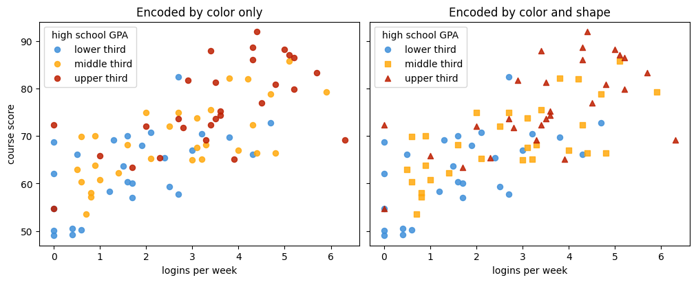
Takeaway
Never let color be the only thing carrying a distinction. A second channel, marker shape for points, line style for lines, direct labels for bars, costs one argument and makes the figure work for a reader who cannot separate two of your colors, and for anyone who prints it.
Predict before you read on
Predict. Take the palette you just used and convert each color to the gray it would print as. Do the categories stay distinguishable? Commit to an answer before you run the next cell.
# alt: Two strips of color swatches, the palette in color above and the# alt: same colors converted to the gray they would print as below.import matplotlib.colors as mcolors
fig, axes = plt.subplots(2, 1, figsize=(7, 2.4), layout="constrained")
show = palette[:6]
for i, c inenumerate(show):
axes[0].add_patch(plt.Rectangle((i, 0), 0.9, 1, color=c))
# Relative luminance, the same quantity a contrast check uses.
r, g, b = mcolors.to_rgb(c)
gray = 0.2126 * r + 0.7152 * g + 0.0722 * b
axes[1].add_patch(plt.Rectangle((i, 0), 0.9, 1, color=(gray, gray, gray)))
axes[1].text(i + 0.45, 0.5, f"{gray:.2f}", ha="center", va="center",
color="white"if gray < 0.5else"black")
for ax, title inzip(axes, [f"{available[0]} in color", "the same colors as printed gray"]):
ax.set_xlim(0, len(show))
ax.set_ylim(0, 1)
ax.set_xticks([])
ax.set_yticks([])
ax.set_title(title, fontsize=10)
What happened
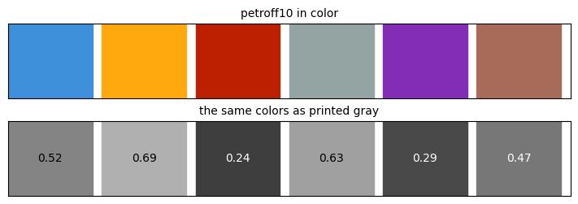
Two colors with similar luminance become the same gray, and no amount of hue difference rescues them once the figure is printed or photocopied. The numbers printed on the lower strip are relative luminance on a 0 to 1 scale; categories whose values sit close together need a second channel or a different palette.
Your turn
Redraw the section 5 group comparison using the accessible palette, with the two groups distinguished by something in addition to color, and check that the two colors you chose differ in luminance.
Show a worked solution
labels = ["did not succeed", "succeeded"]
means = cohort.groupby("success").course_score.mean()
two = palette[:2]
fig, ax = plt.subplots(figsize=(5.5, 3.8), layout="constrained")
bars = ax.bar([0, 1], means, width=0.6, color=two,
hatch=["", "//"], edgecolor="black")
ax.set_xticks([0, 1], labels)
ax.set_ylabel("mean course score")
lum = [0.2126 * mcolors.to_rgb(c)[0] + 0.7152 * mcolors.to_rgb(c)[1]
+ 0.0722 * mcolors.to_rgb(c)[2] for c in two]
ax.set_title(f"Luminance {lum[0]:.2f} and {lum[1]:.2f}, "f"and the hatch works without color at all")
Everything so far has been matplotlib. Two libraries sit on top of it and will draw a figure in one line, and both hand you back matplotlib objects, so everything from sections 2 and 8 still applies.
pandas: .plot() on the frame you already have
DataFrame.plot() and Series.plot() accept a kind and, importantly, an ax. Passing the Axes you made keeps the figure yours.
fig, axes = plt.subplots(1, 2, figsize=(10, 3.6), layout="constrained")
# The matplotlib version.
axes[0].hist(cohort.course_score, bins=12, edgecolor="white")
axes[0].set_xlabel("course score")
axes[0].set_ylabel("students")
axes[0].set_title("matplotlib")
# The pandas version, drawn onto an Axes we made.
cohort.course_score.plot(kind="hist", bins=12, edgecolor="white", ax=axes[1])
axes[1].set_xlabel("course score")
axes[1].set_title("pandas, with ax=")
fig.suptitle("Same figure, and the second one is one line")
output
Text(0.5, 0.98, 'Same figure, and the second one is one line')
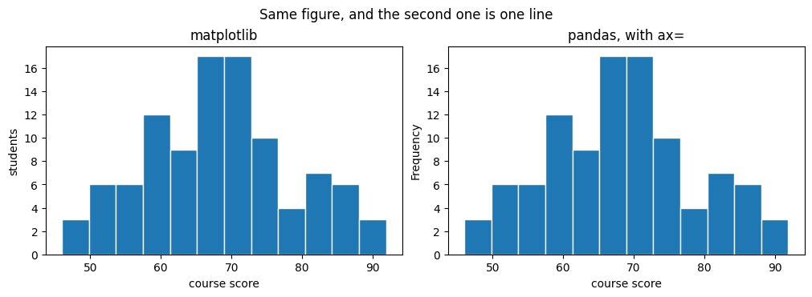
# .plot() returns the Axes, which is why the rest still works.
returned = cohort.course_score.plot(kind="hist", bins=12)
print(type(returned))
returned.set_title("Still an Axes, so set_title is still the method")
output
<class 'matplotlib.axes._axes.Axes'>
Text(0.5, 1.0, 'Still an Axes, so set_title is still the method')
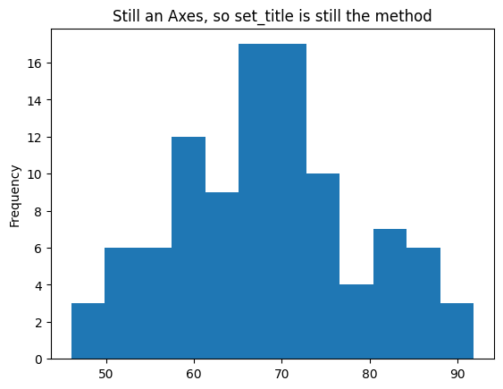
Takeaway
Always pass ax=. Without it, pandas draws on whatever Axes matplotlib thinks is current, which is the implicit interface arriving through a side door. With it, .plot() is a convenient way to fill an Axes you control.
kind= covers line, bar, barh, hist, box, kde, area, scatter and hexbin. When you need anything the kind does not offer, you already have the Axes and can keep going in matplotlib.
seaborn: statistical figures in one call
seaborn's value is the figures that would take a dozen matplotlib lines: a correlation heatmap, a regression plot with a confidence band, a grid of every pair of variables.
It divides into two kinds of function, and the difference decides how you use them.
import seaborn as sns
sns.set_theme(style="whitegrid") # the current call; sns.set() is the old name
corr = cohort[["hs_gpa", "hs_attendance", "logins_per_week",
"submission_rate", "course_score"]].corr()
fig, ax = plt.subplots(figsize=(6, 4.8), layout="constrained")
sns.heatmap(corr, annot=True, fmt=".2f", cmap="coolwarm", vmin=-1, vmax=1,
ax=ax)
ax.set_title("Correlations, with the diverging scale centered on zero")
output
Text(0.5, 1.0, 'Correlations, with the diverging scale centered on zero')
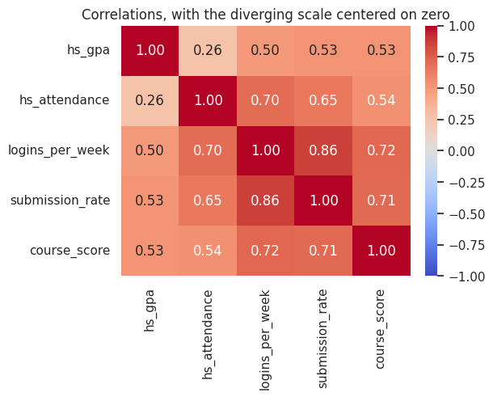
fig, axes = plt.subplots(1, 2, figsize=(10, 4), sharey=True,
layout="constrained")
sns.regplot(data=cohort, x="logins_per_week", y="course_score", ax=axes[0])
axes[0].set_title("regplot: fit and confidence band")
sns.boxplot(data=cohort, x="success", y="course_score", ax=axes[1])
axes[1].set_xticks([0, 1], ["did not succeed", "succeeded"])
axes[1].set_xlabel("")
axes[1].set_title("boxplot: groups without the loop")
output
Text(0.5, 1.0, 'boxplot: groups without the loop')
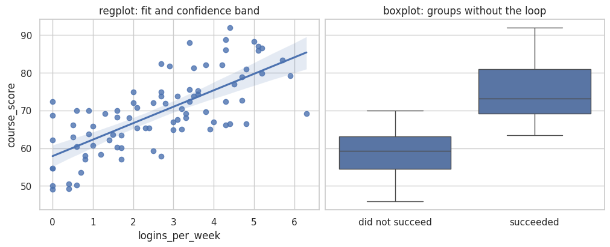
Every seaborn call above passed ax=. Those are seaborn's axes-level functions, and ax= is how seaborn's own documentation says to use them with the object-oriented interface.
The other kind is different, and it is worth being explicit about rather than surprised by.
# A figure-level function builds its OWN figure. It does not take ax=.
grid = sns.pairplot(cohort[["hs_gpa", "logins_per_week", "course_score"]],
height=2.0)
grid.figure.suptitle("pairplot returns a grid object, not an Axes", y=1.02)
print(type(grid))
output
<class 'seaborn.axisgrid.PairGrid'>
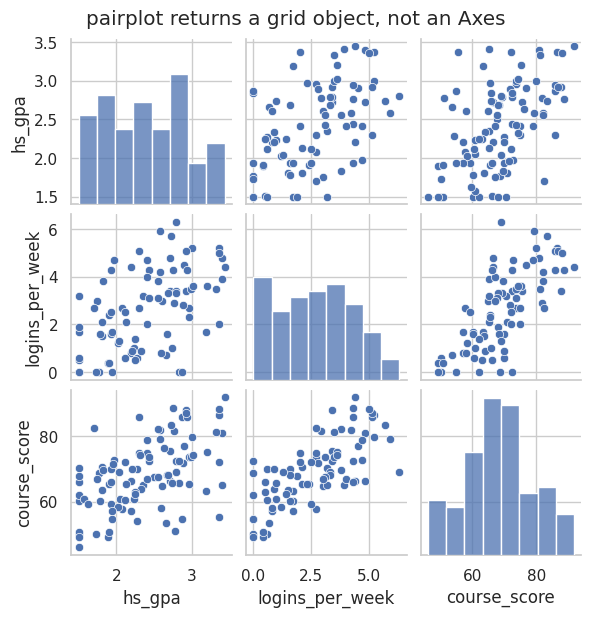
Takeaway
The rule for this module. Axes-level functions (scatterplot, histplot, boxplot, regplot, heatmap, kdeplot) are artists: make the Figure yourself and pass ax=.
Figure-level functions (relplot, displot, catplot, lmplot, jointplot, pairplot) are figure constructors: they own their figure, they cannot take ax=, and you customize them through what they return, using grid.figure, grid.axes, or grid.set(...).
If a figure has to sit inside a layout you built, that decides it: use the axes-level function.
Your turn
Build a two-panel figure using seaborn axes-level functions on Axes you created: a histplot of course_score on the left and a regplot of submission_rate against course_score on the right.
Show a worked solution
fig, axes = plt.subplots(1, 2, figsize=(10, 4), layout="constrained")
sns.histplot(data=cohort, x="course_score", bins=12, ax=axes[0])
axes[0].set_title(f"n = {cohort.course_score.notna().sum()}")
sns.regplot(data=cohort, x="submission_rate", y="course_score", ax=axes[1])
sub = cohort[["submission_rate", "course_score"]].dropna()
axes[1].set_title(f"r = {sub.submission_rate.corr(sub.course_score):.2f}, "f"n = {len(sub)}")
fig.suptitle("seaborn drawing into a figure we built")
A figure that looks right in a notebook can be unreadable in a document, and the reason is almost always the same: the file was written at the wrong resolution, or in the wrong format.
import os
# Write into a folder rather than beside the notebook. A report generates a# lot of these, and a working directory with thirty loose PNGs in it is its# own small problem.
os.makedirs("figures", exist_ok=True)
fig, ax = plt.subplots(figsize=(6, 4), layout="constrained")
ax.scatter(cohort.hs_gpa, cohort.course_score, s=26, alpha=0.7)
ax.set_xlabel("high school GPA")
ax.set_ylabel("course score")
ax.set_title("The figure we are about to save five ways")
for name, kwargs in [("fig_72.png", {"dpi": 72}),
("fig_150.png", {"dpi": 150}),
("fig_300.png", {"dpi": 300}),
("fig.pdf", {}),
("fig.svg", {})]:
path = os.path.join("figures", name)
fig.savefig(path, **kwargs)
print(f"{name:12} {os.path.getsize(path) / 1024:6.0f} KB")
The three PNGs hold identical information at 9, 28 and 113 kilobytes. The difference is how many pixels the file contains, which decides whether the axis labels survive being printed or projected. 72 is a screen thumbnail, 150 is a reasonable document figure, and 300 is print.
The PDF is 9 kilobytes and loses nothing when it is enlarged, because it stores the instructions to draw the figure rather than a grid of pixels.
Raster and vector
Formats
Scales without blurring
Good for
Raster
PNG, JPG
no
screens, slides, anything with a photograph in it
Vector
PDF, SVG, EPS
yes
documents, print, anything with text in it
A figure is mostly text and thin lines, which is exactly what vector formats handle well. Send a PDF to anyone producing a printed report. Use PNG at 150 or higher when the destination needs an image file, and avoid JPG for figures, since its compression smears the edges of text and lines.
# bbox_inches="tight" trims the surrounding whitespace, which# matters when the figure is being dropped into a document.
fig.savefig("figures/fig_padded.png", dpi=150)
fig.savefig("figures/fig_tight.png", dpi=150, bbox_inches="tight")
for name in ["fig_padded.png", "fig_tight.png"]:
print(f"{name:16} {os.path.getsize('figures/' + name) / 1024:6.0f} KB")
output
fig_padded.png 50 KB
fig_tight.png 51 KB
Takeaway
fig.savefig(name, dpi=..., bbox_inches="tight") is the call worth memorizing, and note it is the Figure that saves itself, not plt.
Two habits: save from the same cell that builds the figure, so the file cannot drift from the code that made it, and give the file a name that says what the figure claims rather than figure1.png.
Your turn
Save your best figure from section 9 as a 200 dpi PNG and as a PDF, with a filename that states the finding.
Show a worked solution
means = cohort.groupby("success").course_score.mean()
labels = ["did not succeed", "succeeded"]
fig, ax = plt.subplots(figsize=(6, 4), layout="constrained")
ax.bar([0, 1], means, width=0.6)
ax.set_xticks([0, 1], labels)
ax.set_ylabel("mean course score")
ax.set_title(f"Successful students average {means.iloc[1] - means.iloc[0]:.0f} "f"points higher")
for name in ["success_gap_16_points.png", "success_gap_16_points.pdf"]:
path = os.path.join("figures", name)
fig.savefig(path, dpi=200, bbox_inches="tight")
print(f"wrote {path} ({os.path.getsize(path) / 1024:.0f} KB)")
Module 4 ended on the same idea, and it matters more here. A plotting call that raises an error is a good day: you get a traceback pointing at the line. The dangerous ones draw something.
The loud ones first
Two errors you will meet, worth meeting on purpose.
This cell is meant to fail. Read the error rather than avoiding it.
output
Traceback (most recent call last):
File "<expected to fail>", line 2, in <module>
File "/usr/local/lib/python3.11/dist-packages/matplotlib/_api/deprecation.py", line 453, in wrapper
return func(*args, **kwargs)
^^^^^^^^^^^^^^^^^^^^^
File "/usr/local/lib/python3.11/dist-packages/matplotlib/__init__.py", line 1524, in inner
return func(
^^^^^
File "/usr/local/lib/python3.11/dist-packages/matplotlib/axes/_axes.py", line 4936, in scatter
raise ValueError("x and y must be the same size")
ValueError: x and y must be the same size
This cell is meant to fail. Read the error rather than avoiding it.
output
Traceback (most recent call last):
File "<expected to fail>", line 3, in <module>
File "/usr/local/lib/python3.11/dist-packages/matplotlib/axes/_base.py", line 74, in wrapper
return get_method(self)(*args, **kwargs)
^^^^^^^^^^^^^^^^^^^^^^^^^^^^^^^^^
File "/usr/local/lib/python3.11/dist-packages/matplotlib/axis.py", line 2220, in set_ticks
self.set_ticklabels(labels, minor=minor, **kwargs)
File "/usr/local/lib/python3.11/dist-packages/matplotlib/axis.py", line 2106, in set_ticklabels
raise ValueError(
ValueError: The number of FixedLocator locations (2), usually from a call to set_ticks, does not match the number of labels (3).
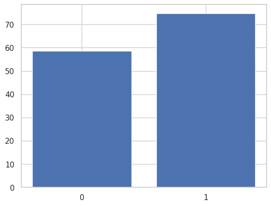
Both say what is wrong in the message. The second is worth reading closely, because it is the one that appears when a label list drifts out of step with the categories it names, which happens whenever the number of groups changes.
Quiet failure 1: the artist went to the wrong Axes
An explicit figure fails this way when a loop index or a hand-edited number gets out of step. Everything is drawn, nothing errors, and the labels describe a different panel.
Predict before you read on
Predict. Two panels. The data goes to the first, and the labels are set on the second. What does the figure look like? Commit to an answer before you run the next cell.
fig, axes = plt.subplots(1, 2, figsize=(9, 3.2), layout="constrained")
axes[0].scatter(cohort.hs_gpa, cohort.course_score, s=24, alpha=0.7)
# The typo: axes[1] instead of axes[0].
axes[1].set_xlabel("high school GPA")
axes[1].set_ylabel("course score")
axes[1].set_title("Prior record against outcome")
What happened
output
Text(0.5, 1.0, 'Prior record against outcome')
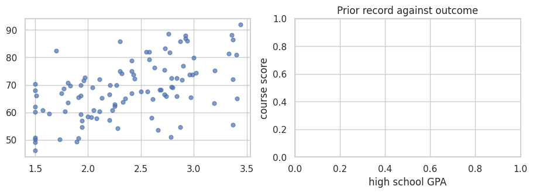
An empty labeled panel beside an unlabeled full one. Obvious here because the figure has two panels and nothing else. In a 2 by 3 grid built in a loop, with a title on every panel, it reads as one panel that happens to have no data, which is the sort of thing that ships.
Quiet failure 2: the missing rows
This is the one this module has been warning about since section 0.
fig, ax = plt.subplots(figsize=(6, 3.6), layout="constrained")
ax.scatter(cohort.logins_per_week, cohort.course_score, s=26, alpha=0.7)
ax.set_xlabel("logins per week")
ax.set_ylabel("course score")
ax.set_title("All 100 students") # this title is false
offsets = np.asarray(ax.collections[0].get_offsets())
drawn = int(np.isfinite(offsets).all(axis=1).sum())
print(f"rows in the frame : {len(cohort)}")
print(f"points handed to scatter: {len(offsets)}")
print(f"points actually drawn : {drawn}")
output
rows in the frame : 100
points handed to scatter: 100
points actually drawn : 85
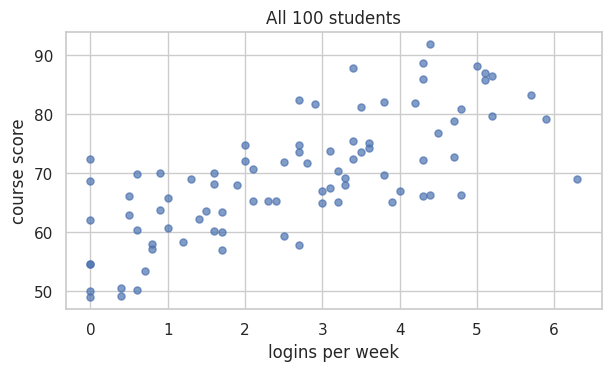
Takeaway
Read those three numbers carefully, because they are not what you would guess. matplotlib accepted all 100 rows, and 85 of them produced a visible point. The missing values are still in the collection, held as a masked array, and they are simply never drawn. So the figure shows 85 students, no warning was issued, and a naive len() on the offsets would have told you 100 and agreed with the false title.
This is the mechanical argument for D30, the rule that a figure's title states its finding and the cell computes the number in it. A computed n cannot be wrong in this way.
# The honest version, and the check worth running on any figure.
sub = cohort[["logins_per_week", "course_score"]].dropna()
fig, ax = plt.subplots(figsize=(6, 3.6), layout="constrained")
ax.scatter(sub.logins_per_week, sub.course_score, s=26, alpha=0.7)
ax.set_xlabel("logins per week")
ax.set_ylabel("course score")
ax.set_title(f"{len(sub)} of {len(cohort)} students have LMS records")
output
Text(0.5, 1.0, '85 of 100 students have LMS records')
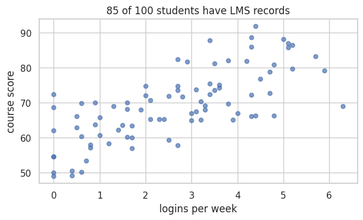
Quiet failure 3: the column that is not what you think
A column read from a CSV can arrive as text that looks numeric. Plotting it does not fail. It produces a category for every distinct value.
as_text = cohort.course_score.round().astype(int).astype(str)
fig, axes = plt.subplots(1, 2, figsize=(10, 3.4), layout="constrained")
axes[0].hist(as_text, bins=12)
axes[0].set_title("course_score as text")
axes[0].tick_params(axis="x", labelrotation=90, labelsize=6)
axes[1].hist(cohort.course_score, bins=12, edgecolor="white")
axes[1].set_title("course_score as numbers")
print("dtype of the text version:", as_text.dtype)
output
dtype of the text version: str
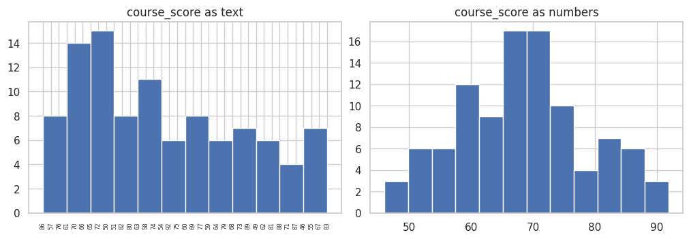
What happened
The left panel is not a distribution. Each distinct string became its own category, in the order encountered, so the x axis is neither sorted nor numeric and the shape means nothing. Check .dtype before plotting anything that came out of a file, which is the same habit Module 4 built for submission_rate.
Quiet failure 4: figures that pile up
Every figure you create stays in memory until it is closed. In a notebook this is usually harmless. In a loop that writes fifty figures to disk, it is not.
before = len(plt.get_fignums())
for band in ["lower", "middle", "upper"]:
fig, ax = plt.subplots()
ax.set_title(band)
fig.savefig(f"figures/band_{band}.png", dpi=72)
plt.close(fig) # the line that mattersprint(f"open figures before: {before}, after: {len(plt.get_fignums())}")
output
open figures before: 0, after: 0
Takeaway
plt.close(fig) after saving, whenever figures are being made in a loop. Without it matplotlib warns after twenty open figures and keeps every one of them in memory.
The four quiet failures share a shape: the code ran, so nothing told you. The defense is to check the figure against the data rather than against your expectation. Count the points. Print the dtype. Ask which Axes you are on.
Your turn
Write a small function that takes an Axes and reports how many points were actually drawn on it, then use it to check one of your own figures.
Show a worked solution
defpoints_drawn(ax):
"""Points with a finite x and y, across every scatter on this Axes.
len(offsets) is the wrong answer: matplotlib keeps missing values in the
collection as a masked array and declines to draw them.
"""
total = 0for collection in ax.collections:
offsets = np.asarray(collection.get_offsets())
total += int(np.isfinite(offsets).all(axis=1).sum())
return total
sub = cohort[["submission_rate", "course_score"]].dropna()
fig, ax = plt.subplots(figsize=(6, 3.6), layout="constrained")
ax.scatter(cohort.submission_rate, cohort.course_score, s=26, alpha=0.7)
ax.set_xlabel("submission rate")
ax.set_ylabel("course score")
drawn = points_drawn(ax)
ax.set_title(f"{drawn} points drawn, {len(cohort) - drawn} students missing")
print(f"frame rows {len(cohort)}, drawn {drawn}, dropna agrees: {drawn == len(sub)}")
Amy Lee has to walk into a room and make three points. Each of these builds one figure, and each is judged on a single question:
Does the figure support the claim in its own title?
That means the title states a finding, the number in it is computed by the cell, the n is visible or stated, and nothing in section 9's three categories is being done to the reader.
Challenge 1: what predicts the outcome
Build one figure that lets the Cabinet compare how well prior record and current engagement each track course score. It has to be readable as a comparison, which means a shared scale, and it has to be honest about the different sample sizes.
Show a worked solution
pairs = [("hs_gpa", "high school GPA"),
("hs_attendance", "high school attendance"),
("logins_per_week", "logins per week"),
("submission_rate", "submission rate")]
fig, axes = plt.subplots(2, 2, figsize=(9, 6.5), sharey=True, layout="constrained")
results = {}
for ax, (col, label) inzip(axes.flat, pairs):
sub = cohort[[col, "course_score"]].dropna()
r = sub[col].corr(sub.course_score)
results[label] = r
ax.scatter(sub[col], sub.course_score, s=24, alpha=0.7)
ax.set_xlabel(label)
ax.set_title(f"r = {r:.2f}, n = {len(sub)}")
for ax in axes[:, 0]:
ax.set_ylabel("course score")
best = max(results, key=results.get)
fig.suptitle(f"{best} tracks course score most closely "f"(r = {results[best]:.2f}), on 85 of 100 students")
Challenge 2: the finding that changes the plan
The proposal on the table is to fund high school outreach clubs. Build the single figure that shows why that would be spending on a correlation belonging to something else. One figure, not three.
Show a worked solution
sub = cohort[["hs_clubs", "course_score", "hs_gpa"]].dropna()
sub = sub.assign(band=pd.qcut(sub.hs_gpa, 3,
labels=["lower third", "middle third", "upper third"]))
raw = sub.hs_clubs.corr(sub.course_score)
within = [g.hs_clubs.corr(g.course_score)
for _, g in sub.groupby("band", observed=True)]
fig, ax = plt.subplots(figsize=(7, 4.5), layout="constrained")
for (name, g), marker inzip(sub.groupby("band", observed=True), ["o", "s", "^"]):
ax.scatter(g.hs_clubs, g.course_score, s=36, alpha=0.85, marker=marker,
label=f"{name} (r = {g.hs_clubs.corr(g.course_score):.2f})")
ax.legend(title="high school GPA")
ax.set_xlabel("high school clubs")
ax.set_ylabel("course score")
ax.set_title(f"Clubs and score correlate at {raw:.2f} overall, "f"and at most {max(within):.2f} within a GPA band")
Challenge 3: the audit trail
The Cabinet will ask how many students each claim rests on. Build a figure that answers it: for each column the report uses, how many of the 100 students have a value. Sort it so the gaps are obvious, and state the worst case in the title.
Those three figures are the module. One compares candidates on a shared scale, one controls for the variable that explains both, and one tells the reader how much data each claim rests on.
Nothing in them is a chart type you could not have drawn in section 3. What changed is that each figure now makes a claim you can check, on a stated number of students, without asking the reader to compare areas, read a truncated axis, or trust a color.
Ten questions covering chart selection, Matplotlib, Seaborn, and visualization best practices. Each question comes up one at a time - no going back, but you can retake when done.
This quick sandbox doesn't ship the full plotting stack, so to run and tweak your own Matplotlib and Seaborn code from this module, use one of the notebook options below — they render charts inline with no setup. (Want to see matplotlib render live in the browser? The Board Meeting simulation below does exactly that.) Good options for your own practice: